6 Rethinking: Chapter 5
Spurious waffles
by Richard McElreath, building on the Summaries by Solomon Kurz and Jake Thompson.
library(sf)
library(rethinking)
library(ggfx)
data(WaffleDivorce)
WaffleDivorce <- WaffleDivorce %>% as_tibble()
usa <- read_sf("~/work/geo_store/USA/usa_states_albers_revised.gpkg") %>%
left_join(WaffleDivorce, by = c(name = "Location" ))
p_waffle <- usa %>%
ggplot(aes(fill = WaffleHouses / Population)) +
scale_fill_gradientn(colours = c(clr0d, clr2) %>%
clr_lighten(.3))
p_divorce <- usa %>%
ggplot(aes(fill = Divorce))+
scale_fill_gradientn(colours = c(clr0d, clr1) %>%
clr_lighten(.3))
p_age <- usa %>%
ggplot(aes(fill = MedianAgeMarriage))+
scale_fill_gradientn(colours = c(clr_lighten(clr0d, .3), clr3))p_waffle +
p_divorce +
p_age +
plot_layout(guides = "collect") &
with_shadow(geom_sf(aes(color = after_scale(clr_darken(fill)))),
x_offset = 0, y_offset = 0, sigma = 3) &
guides(fill = guide_colorbar(title.position = "top",
barheight = unit(5,"pt"))) &
theme(legend.position = "bottom")
Age Model: first model (divorce rate depends on age at marriage)
\[ \begin{array}{cccr} D_i & {\sim} & Normal(\mu, \sigma) & \textrm{[likelihood]}\\ \mu_i & = & \alpha + \beta_{A} A_{i} & \textrm{[linear model]}\\ \alpha & \sim & Normal(0, 0.2) & \textrm{[$\alpha$ prior]}\\ \beta_{A} & \sim & Normal(0, 0.5) & \textrm{[$\beta$ prior]}\\ \sigma & \sim & Exponential(1) & \textrm{[$\sigma$ prior]} \end{array} \]
data_waffle <- WaffleDivorce %>%
mutate(across(.cols = c(Divorce, Marriage, MedianAgeMarriage),
.fns = standardize,
.names = "{str_to_lower(.col)}_std"),
waffle_pop = WaffleHouses / Population) %>%
rename(median_age_std = "medianagemarriage_std")
sd(data_waffle$MedianAgeMarriage)#> [1] 1.24363model_age <- quap(
flist = alist(
divorce_std ~ dnorm( mu, sigma ) ,
mu <- alpha + beta_A * median_age_std ,
alpha ~ dnorm( 0, 0.2 ),
beta_A ~ dnorm( 0, 0.5 ),
sigma ~ dexp( 1 )
),
data = data_waffle
)
set.seed(10)
age_priors <- extract.prior(model_age) %>%
as_tibble()
prior_prediction_range <- c(-2, 2)
age_prior_predictions <- link(model_age,
post = age_priors,
data = list(median_age_std = prior_prediction_range)) %>%
as_tibble() %>%
set_names(nm = as.character(prior_prediction_range)) %>%
mutate(.draw = row_number())
age_prior_predictions %>%
filter(.draw < 51) %>%
ggplot() +
geom_segment(aes(x = -2, xend = 2, y = `-2`, yend = `2`, group = .draw),
color = clr2, alpha = .2) +
labs(x = "median age of marriage (std)",
y = "divorce rate (std)")
age_seq <- seq(min(data_waffle$median_age_std),
max(data_waffle$median_age_std),
length.out = 101)
model_age_posterior_prediction_samples <- link(model_age, data = data.frame(median_age_std = age_seq)) %>%
as_tibble() %>%
set_names(nm = age_seq) %>%
pivot_longer(cols = everything(), names_to = "median_age_std", values_to = "divorce_std") %>%
mutate(median_age_std = as.numeric(median_age_std),
MedianAgeMarriage = median_age_std * sd(data_waffle$MedianAgeMarriage) +
mean(data_waffle$MedianAgeMarriage),
Divorce = divorce_std * sd(data_waffle$Divorce) +
mean(data_waffle$Divorce))
model_age_posterior_prediction_pi <- model_age_posterior_prediction_samples %>%
group_by(median_age_std, MedianAgeMarriage) %>%
summarise(mean = mean(Divorce),
PI_lower = PI(Divorce)[1],
PI_upper = PI(Divorce)[2]) %>%
ungroup()
model_age_posterior_prediction_simulation <- sim(model_age,
data = data.frame(median_age_std = age_seq),
n = 5e3) %>%
as_tibble() %>%
set_names(nm = age_seq) %>%
pivot_longer(cols = everything(), names_to = "median_age_std", values_to = "divorce_std") %>%
mutate(median_age_std = as.numeric(median_age_std),
MedianAgeMarriage = median_age_std * sd(data_waffle$MedianAgeMarriage) +
mean(data_waffle$MedianAgeMarriage),
Divorce = divorce_std * sd(data_waffle$Divorce) +
mean(data_waffle$Divorce))
model_age_posterior_prediction_simulation_pi <- model_age_posterior_prediction_simulation %>%
group_by(median_age_std, MedianAgeMarriage) %>%
summarise(mean = mean(Divorce),
PI_lower = PI(Divorce)[1],
PI_upper = PI(Divorce)[2]) %>%
ungroup()
p_age <- ggplot(mapping = aes(x = MedianAgeMarriage)) +
geom_ribbon(data = model_age_posterior_prediction_simulation_pi,
aes(ymin = PI_lower, ymax = PI_upper), fill = clr0d, alpha = .35) +
geom_smooth(data = model_age_posterior_prediction_pi, stat = "identity",
aes(y = mean, ymin = PI_lower, ymax = PI_upper),
color = clr3, fill = fll3, size = .4) +
geom_point(data = data_waffle, aes(y = Divorce), color = rgb(0,0,0,.5), size = .6) +
labs(y = " divorce")Marriage Model: alternative model (divorce rate depends on marriage rate)
\[ \begin{array}{cccr} D_i & {\sim} & Normal(\mu, \sigma) & \textrm{[likelihood]}\\ \mu_i & = & \alpha + \beta_{M} M_{i} & \textrm{[linear model]}\\ \alpha & \sim & Normal(0, 0.2) & \textrm{[$\alpha$ prior]}\\ \beta_{M} & \sim & Normal(0, 0.5) & \textrm{[$\beta$ prior]}\\ \sigma & \sim & Exponential(1) & \textrm{[$\sigma$ prior]} \end{array} \]
model_marriage <- quap(
flist = alist(
divorce_std ~ dnorm( mu, sigma ) ,
mu <- alpha + beta_M * marriage_std ,
alpha ~ dnorm( 0, 0.2 ),
beta_M ~ dnorm( 0, 0.5 ),
sigma ~ dexp( 1 )
),
data = data_waffle
)marriage_seq <- seq(min(data_waffle$marriage_std),
max(data_waffle$marriage_std),
length.out = 101)
model_marriage_posterior_prediction_samples <- link(model_marriage,
data = data.frame(marriage_std = marriage_seq)) %>%
as_tibble() %>%
set_names(nm = marriage_seq) %>%
pivot_longer(cols = everything(), names_to = "marriage_std", values_to = "divorce_std") %>%
mutate(marriage_std = as.numeric(marriage_std),
Marriage = marriage_std * sd(data_waffle$Marriage) +
mean(data_waffle$Marriage),
Divorce = divorce_std * sd(data_waffle$Divorce) +
mean(data_waffle$Divorce))
model_marriage_posterior_prediction_pi <- model_marriage_posterior_prediction_samples %>%
group_by(marriage_std, Marriage) %>%
summarise(mean = mean(Divorce),
PI_lower = PI(Divorce)[1],
PI_upper = PI(Divorce)[2]) %>%
ungroup()
model_marriage_posterior_prediction_simulation <- sim(model_marriage,
data = data.frame(marriage_std = marriage_seq),
n = 5e3) %>%
as_tibble() %>%
set_names(nm = marriage_seq) %>%
pivot_longer(cols = everything(), names_to = "marriage_std", values_to = "divorce_std") %>%
mutate(marriage_std = as.numeric(marriage_std),
Marriage = marriage_std * sd(data_waffle$Marriage) +
mean(data_waffle$Marriage),
Divorce = divorce_std * sd(data_waffle$Divorce) +
mean(data_waffle$Divorce))
model_marriage_posterior_prediction_simulation_pi <- model_marriage_posterior_prediction_simulation %>%
group_by(marriage_std, Marriage) %>%
summarise(mean = mean(Divorce),
PI_lower = PI(Divorce)[1],
PI_upper = PI(Divorce)[2]) %>%
ungroup()
p_marriage <- ggplot(mapping = aes(x = Marriage)) +
geom_ribbon(data = model_marriage_posterior_prediction_simulation_pi,
aes(ymin = PI_lower, ymax = PI_upper), fill = clr0d, alpha = .35) +
geom_smooth(data = model_marriage_posterior_prediction_pi, stat = "identity",
aes(y = mean, ymin = PI_lower, ymax = PI_upper),
color = clr1, fill = fll1, size = .2) +
geom_point(data = data_waffle, aes(y = Divorce), color = rgb(0,0,0,.5), size = .6) +
labs(y = " divorce")Waffle Model:
model_waffle <- quap(
flist = alist(
divorce_std ~ dnorm( mu, sigma ) ,
mu <- alpha + beta_W * waffle_pop ,
alpha ~ dnorm( 0, 0.2 ),
beta_W ~ dnorm( 0, 0.5 ),
sigma ~ dexp( 1 )
),
data = data_waffle
)
waffle_seq <- seq(min(data_waffle$waffle_pop),
max(data_waffle$waffle_pop),
length.out = 101)
model_waffle_posterior_prediction_samples <- link(model_waffle,
data = data.frame(waffle_pop = waffle_seq)) %>%
as_tibble() %>%
set_names(nm = waffle_seq) %>%
pivot_longer(cols = everything(), names_to = "waffle_pop", values_to = "divorce_std") %>%
mutate(waffle_pop = as.numeric(waffle_pop),
Divorce = divorce_std * sd(data_waffle$Divorce) +
mean(data_waffle$Divorce))
model_waffle_posterior_prediction_pi <- model_waffle_posterior_prediction_samples %>%
group_by(waffle_pop) %>%
summarise(mean = mean(Divorce),
PI_lower = PI(Divorce)[1],
PI_upper = PI(Divorce)[2]) %>%
ungroup()
p_waffle <- ggplot(mapping = aes(x = waffle_pop)) +
geom_smooth(data = model_waffle_posterior_prediction_pi, stat = "identity",
aes(y = mean, ymin = PI_lower, ymax = PI_upper),
color = clr2, fill = fll2, size = .2) +
geom_point(data = data_waffle, aes(y = Divorce), color = rgb(0,0,0,.5), size = .6) +
labs(y = " divorce")p_waffle +
p_marriage + theme(axis.title.y = element_blank(), axis.text.y = element_blank()) +
p_age + theme(axis.title.y = element_blank(), axis.text.y = element_blank()) &
lims(y = c(4, 15))
6.1 Directed Acyclic Graphs
dag1 <- dagify(
D ~ A + M,
M ~ A,
exposure = "A",
outcome = "M") %>%
tidy_dagitty(.dagitty = .,layout = tibble(x = c(0,1,.5), y = c(1,1, .4))) %>%
mutate(stage = if_else(name == "D", "response",
if_else(name %in% c("A", "M"),
"predictor", "confounds")))
dag2 <- dagify(
D ~ A,
M ~ A,
exposure = "A",
outcome = "M") %>%
tidy_dagitty(.dagitty = .,layout = tibble(x = c(0,.5,1), y = c(1, .4, 1))) %>%
mutate(stage = if_else(name == "D", "response",
if_else(name %in% c("A", "M"),
"predictor", "confounds")))
plot_dag(dag1, clr_in = clr3) +
plot_dag(dag2, clr_in = clr3) &
scale_y_continuous(limits = c(.35, 1.05)) &
coord_equal()
DAG notation:
- \(Y \perp \!\!\! \perp X | Z\): “\(Y\) is independent of \(X\) conditional on \(Z\)”
- \(D \not\!\perp\!\!\!\perp A\): "\(D\) is associated with \(A\)"
Check pair wise correlations with cor():
data_waffle %>%
dplyr::select(divorce_std,marriage_std, median_age_std) %>%
cor() %>%
as.data.frame(row.names = row.names(.)) %>%
round(digits = 2) %>%
knitr::kable()| divorce_std | marriage_std | median_age_std | |
|---|---|---|---|
| divorce_std | 1.00 | 0.37 | -0.60 |
| marriage_std | 0.37 | 1.00 | -0.72 |
| median_age_std | -0.60 | -0.72 | 1.00 |
library(dagitty)
dagitty('dag{ D <- A -> M -> D}') %>%
impliedConditionalIndependencies()
dagitty('dag{ D <- A -> M }') %>%
impliedConditionalIndependencies()#> D _||_ M | A6.2 Multiple Regression notion
\[ \begin{array}{cccr} D_i & {\sim} & Normal(\mu, \sigma) & \textrm{[likelihood]}\\ \mu_i & = & \alpha + \beta_{M} M_{i} + \beta_{A} A_{i} & \textrm{[linear model]}\\ \alpha & \sim & Normal(0, 0.2) & \textrm{[$\alpha$ prior]}\\ \beta_{M} & \sim & Normal(0, 0.5) & \textrm{[$\beta_M$ prior]}\\ \beta_{A} & \sim & Normal(0, 0.5) & \textrm{[$\beta_A$ prior]}\\ \sigma & \sim & Exponential(1) & \textrm{[$\sigma$ prior]} \end{array} \]
or compact notion
\[ \mu_i = \alpha + \sum_{j = 1}^{n} \beta_jx_{ji} \]
or even matrix notion
\[ m = Xb \]
model_multiple <- quap(
flist = alist(
divorce_std ~ dnorm( mu, sigma ) ,
mu <- alpha + beta_M * marriage_std + beta_A * median_age_std,
alpha ~ dnorm( 0, 0.2 ),
beta_A ~ dnorm( 0, 0.5 ),
beta_M ~ dnorm( 0, 0.5 ),
sigma ~ dexp( 1 )
),
data = data_waffle
)
precis(model_multiple) %>%
round(digits = 2) %>%
as.matrix() %>%
knitr::kable()| mean | sd | 5.5% | 94.5% | |
|---|---|---|---|---|
| alpha | 0.00 | 0.10 | -0.16 | 0.16 |
| beta_A | -0.61 | 0.15 | -0.85 | -0.37 |
| beta_M | -0.07 | 0.15 | -0.31 | 0.18 |
| sigma | 0.79 | 0.08 | 0.66 | 0.91 |
ct <- coeftab(model_age, model_marriage, model_multiple,se = TRUE)
plot_coeftab(ct)
beta_A doesn’t really change, it only grows more uncertain, yet beta_M is only associated with divorce, when marriage rate is missing from the model.
“Once we know the median age at marriage for a State, there is little to no additional predictive power in also knowing the rate of marriage at that State.”
\(\rightarrow\) \(D \perp \!\!\! \perp M | A\)
simulating the divorcee example
n <- 50
data_divorce_sim <- tibble(median_age_std = rnorm(n),
marriage_std = rnorm(n, mean = -median_age_std),
divorce_std = rnorm(n, mean = median_age_std),
divorce_codep = rnorm(n, mean = median_age_std + marriage_std))
p1 <- ggpairs(data_divorce_sim %>% dplyr::select(-divorce_codep),
lower = list(continuous = wrap(ggally_points, colour = clr1, size = .9, alpha = .7)),
diag = list(continuous = wrap("densityDiag", fill = fll1, color = clr1, adjust = 1)),
upper = list(continuous = wrap(ggally_cor, size = 5, color = "black", family = "Josefin sans")))
p2 <- ggpairs(data_divorce_sim %>% dplyr::select(-divorce_std),
lower = list(continuous = wrap(ggally_points, colour = clr2, size = .9, alpha = .7)),
diag = list(continuous = wrap("densityDiag", fill = fll2, color = clr2, adjust = 1)),
upper = list(continuous = wrap(ggally_cor, size = 5, color = "black", family = "Josefin sans")))
cowplot::plot_grid(ggmatrix_gtable(p1), ggmatrix_gtable(p2))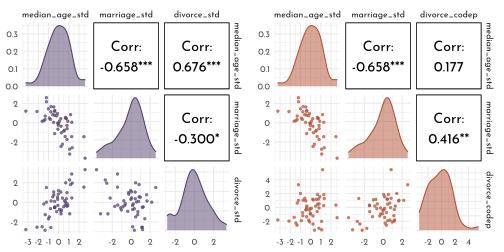
simulating the right DAG (\(D \perp \!\!\! \perp M | A\))
model_multiple_sim <- quap(
flist = alist(
divorce_std ~ dnorm( mu, sigma ) ,
mu <- alpha + beta_M * marriage_std + beta_A * median_age_std,
alpha ~ dnorm( 0, 0.2 ),
beta_A ~ dnorm( 0, 0.5 ),
beta_M ~ dnorm( 0, 0.5 ),
sigma ~ dexp( 1 )
),
data = data_divorce_sim
)
model_age_sim <- quap(
flist = alist(
divorce_std ~ dnorm( mu, sigma ) ,
mu <- alpha + beta_A * median_age_std,
alpha ~ dnorm( 0, 0.2 ),
beta_A ~ dnorm( 0, 0.5 ),
sigma ~ dexp( 1 )
),
data = data_divorce_sim
)
model_marriage_sim <- quap(
flist = alist(
divorce_std ~ dnorm( mu, sigma ) ,
mu <- alpha + beta_M * marriage_std,
alpha ~ dnorm( 0, 0.2 ),
beta_M ~ dnorm( 0, 0.5 ),
sigma ~ dexp( 1 )
),
data = data_divorce_sim
)ct_sim <- coeftab(model_age_sim, model_marriage_sim, model_multiple_sim, se = TRUE)
plot_coeftab(ct_sim)
simulating the left DAG (\(D \not\!\perp\!\!\!\perp M | A\))
model_multiple_sim_codep <- quap(
flist = alist(
divorce_codep ~ dnorm( mu, sigma ) ,
mu <- alpha + beta_M * marriage_std + beta_A * median_age_std,
alpha ~ dnorm( 0, 0.2 ),
beta_A ~ dnorm( 0, 0.5 ),
beta_M ~ dnorm( 0, 0.5 ),
sigma ~ dexp( 1 )
),
data = data_divorce_sim
)
model_age_sim_codep <- quap(
flist = alist(
divorce_codep ~ dnorm( mu, sigma ) ,
mu <- alpha + beta_A * median_age_std,
alpha ~ dnorm( 0, 0.2 ),
beta_A ~ dnorm( 0, 0.5 ),
sigma ~ dexp( 1 )
),
data = data_divorce_sim
)
model_marriage_sim_codep <- quap(
flist = alist(
divorce_codep ~ dnorm( mu, sigma ) ,
mu <- alpha + beta_M * marriage_std,
alpha ~ dnorm( 0, 0.2 ),
beta_M ~ dnorm( 0, 0.5 ),
sigma ~ dexp( 1 )
),
data = data_divorce_sim
)ct_sim_codep <- coeftab(model_age_sim_codep, model_marriage_sim_codep, model_multiple_sim_codep,
se = TRUE)
plot_coeftab(ct_sim_codep)
6.2.1 Visualizations for multivariate regressions
- Predictor residual plots. useful for understanding the model, but not much else
- Posterior prediction plots. checking fit and assessing predictions
- Counterfactual plots. implied predictions for imaginary experiments
6.2.1.1 Predictor residual plots
predictor residual plot for marriage rate
pred_res_marriage <- quap(
flist = alist(
marriage_std ~ dnorm( mu, sigma ) ,
mu <- alpha + beta_AM * median_age_std,
alpha ~ dnorm( 0, 0.2 ),
beta_AM ~ dnorm( 0, 0.5 ),
sigma ~ dexp( 1 )
),
data = data_waffle
)
residuals_marriage <- link(pred_res_marriage) %>%
as_tibble() %>%
set_names(nm = seq_along(data_waffle$median_age_std)) %>%
pivot_longer(cols = everything(),
names_to = "row_idx",
values_to = "fit_marriage") %>%
group_by(row_idx) %>%
summarise(mean_marriage = mean(fit_marriage),
lower_pi = PI(fit_marriage)[1],
upper_pi = PI(fit_marriage)[2]) %>%
ungroup() %>%
mutate(row_idx = as.numeric(row_idx)) %>%
left_join(data_waffle %>% mutate(row_idx = row_number()),. ) %>%
mutate(residual_marriage = marriage_std - mean_marriage)
p_11 <- residuals_marriage %>%
ggplot(aes(x = median_age_std)) +
geom_segment(aes(xend = median_age_std, y = mean_marriage, yend = marriage_std),
color = rgb(0,0,0,.6), linetype = 3) +
geom_line(aes(y = mean_marriage), color = clr1) +
geom_point(aes(y = marriage_std),
color = clr1, fill = clr_lighten(clr1, .35), shape = 21) +
geom_text(data = residuals_marriage %>% filter(Loc %in% c("DC", "HI", "ND", "ME", "WY")),
aes(x = median_age_std - .1, y = marriage_std, label = Loc), hjust = 1)
pred_res_marriage_mu <- quap(
flist = alist(
divorce_std ~ dnorm( mu, sigma ) ,
mu <- alpha + beta * residual_marriage,
alpha ~ dnorm( 0, 0.2 ),
beta ~ dnorm( 0, 0.5 ),
sigma ~ dexp( 1 )
),
data = residuals_marriage
)
seq_res <- seq(min(residuals_marriage$residual_marriage), max(residuals_marriage$residual_marriage), length.out = 101)
residual_lm_posterior <- link(pred_res_marriage_mu, data = data.frame(residual_marriage = seq_res)) %>%
as_tibble() %>%
set_names(nm = seq_res) %>%
pivot_longer(cols = everything(), names_to = "residual_marriage", values_to = "divorce_std") %>%
mutate(residual_marriage = as.numeric(residual_marriage)) %>%
group_by(residual_marriage) %>%
summarise(mean = mean(divorce_std),
PI_lower = PI(divorce_std)[1],
PI_upper = PI(divorce_std)[2]) %>%
ungroup()
p_12 <- ggplot(mapping = aes(x = residual_marriage)) +
geom_vline(xintercept = 0, lty = 3, color = rgb(0,0,0,.6)) +
geom_smooth(data = residual_lm_posterior, aes(y = mean, ymin = PI_lower, ymax = PI_upper),
stat = "identity", color = clr1, fill = fll1, size = .4) +
geom_point(data = residuals_marriage, aes(y = divorce_std),
color = clr1, fill = clr_lighten(clr1,.35), shape = 21) +
geom_text(data = residuals_marriage %>% filter(Loc %in% c("DC", "HI", "ND", "ME", "WY")),
aes(y = divorce_std - .4, label = Loc)) +
labs(y = "divorce_rate (std)")predictor residual plot for age at marriage
pred_res_age <- quap(
flist = alist(
median_age_std ~ dnorm( mu, sigma ) ,
mu <- alpha + beta_MA * marriage_std,
alpha ~ dnorm( 0, 0.2 ),
beta_MA ~ dnorm( 0, 0.5 ),
sigma ~ dexp( 1 )
),
data = data_waffle
)
residuals_age <- link(pred_res_age) %>%
as_tibble() %>%
set_names(nm = seq_along(data_waffle$marriage_std)) %>%
pivot_longer(cols = everything(),
names_to = "row_idx",
values_to = "fit_age") %>%
group_by(row_idx) %>%
summarise(mean_age = mean(fit_age),
lower_pi = PI(fit_age)[1],
upper_pi = PI(fit_age)[2]) %>%
ungroup() %>%
mutate(row_idx = as.numeric(row_idx)) %>%
left_join(data_waffle %>% mutate(row_idx = row_number()),. ) %>%
mutate(residual_age = median_age_std - mean_age)
p_21 <- residuals_age %>%
ggplot(aes(x = marriage_std)) +
geom_segment(aes(xend = marriage_std, y = mean_age, yend = median_age_std),
color = rgb(0,0,0,.6), linetype = 3) +
geom_line(aes(y = mean_age), color = clr2) +
geom_point(aes(y = median_age_std),
color = clr2, fill = clr_lighten(clr2, .35), shape = 21) +
geom_text(data = residuals_marriage %>% filter(Loc %in% c("DC", "HI", "ID")),
aes(x = marriage_std - .1, y = median_age_std, label = Loc), hjust = 1)
pred_res_age_mu <- quap(
flist = alist(
divorce_std ~ dnorm( mu, sigma ) ,
mu <- alpha + beta * residual_age,
alpha ~ dnorm( 0, 0.2 ),
beta ~ dnorm( 0, 0.5 ),
sigma ~ dexp( 1 )
),
data = residuals_age
)
seq_res_age <- seq(min(residuals_age$residual_age), max(residuals_age$residual_age), length.out = 101)
residual_lm_posterior_age <- link(pred_res_age_mu, data = data.frame(residual_age = seq_res_age)) %>%
as_tibble() %>%
set_names(nm = seq_res_age) %>%
pivot_longer(cols = everything(), names_to = "residual_age", values_to = "divorce_std") %>%
mutate(residual_age = as.numeric(residual_age)) %>%
group_by(residual_age) %>%
summarise(mean = mean(divorce_std),
PI_lower = PI(divorce_std)[1],
PI_upper = PI(divorce_std)[2]) %>%
ungroup()
p_22 <- ggplot(mapping = aes(x = residual_age)) +
geom_vline(xintercept = 0, lty = 3, color = rgb(0,0,0,.6)) +
geom_smooth(data = residual_lm_posterior_age, aes(y = mean, ymin = PI_lower, ymax = PI_upper),
stat = "identity", color = clr2, fill = fll2, size = .4) +
geom_point(data = residuals_age, aes(y = divorce_std),
color = clr2, fill = clr_lighten(clr2,.35), shape = 21) +
geom_text(data = residuals_age %>% filter(Loc %in% c("DC", "HI", "ID")),
aes(y = divorce_std - .4, label = Loc)) +
labs(y = "divorce_rate (std)")p_11 + p_21 +
p_12 + p_22
6.2.1.2 Posterior Preediction Plots
posterior_prediction <- link(model_multiple) %>%
as_tibble() %>%
set_names(nm = seq_along(data_waffle$divorce_std)) %>%
pivot_longer(cols = everything(),
names_to = "row_idx",
values_to = "divorce_predicted") %>%
group_by(row_idx) %>%
summarise(divorce_predicted_mean = mean(divorce_predicted),
lower_pi = PI(divorce_predicted)[1],
upper_pi = PI(divorce_predicted)[2]) %>%
ungroup() %>%
mutate(row_idx = as.numeric(row_idx)) %>%
left_join(data_waffle %>% mutate(row_idx = row_number()), . )
posterior_simmulation <- sim(model_multiple) %>%
as_tibble() %>%
set_names(nm = seq_along(data_waffle$divorce_std)) %>%
pivot_longer(cols = everything(),
names_to = "row_idx",
values_to = "divorce_predicted") %>%
group_by(row_idx) %>%
summarise(lower_pi = PI(divorce_predicted)[1],
upper_pi = PI(divorce_predicted)[2]) %>%
ungroup() %>%
mutate(row_idx = as.numeric(row_idx)) %>%
left_join(data_waffle %>% mutate(row_idx = row_number()), . )
ggplot(mapping = aes(x = divorce_std)) +
geom_abline(slope = 1, size = .7, lty = 3, color = rgb(0,0,0,.6)) +
geom_linerange(data = posterior_prediction,
aes(ymin = lower_pi, ymax = upper_pi,
color = Loc %in% c("ID", "UT")))+
geom_point(data = posterior_prediction,
aes(y = divorce_predicted_mean,
color = Loc %in% c("ID", "UT"),
fill = after_scale(clr_lighten(color ,.5))),
shape = 21, size = 1.5)+
geom_text(data = posterior_prediction %>% filter(Loc %in% c("ID", "ME", "RI", "UT")),
aes(x = divorce_std - .15, y = divorce_predicted_mean, label = Loc)) +
scale_color_manual(values = c(`TRUE` = clr2, `FALSE` = clr0d), guide = "none")
Regressions tend to under-estimate variable in the high end of the range and over-estimate in the low end of the range. This is normal, they “pull towards the mean”.
The labeled States however (ID, ME, RI, UT), are not well predicted by the Model (eg. due to additional social factors).
Simulating spurious association
N <- 100
data_spurious <- tibble(x_real = rnorm(N),
x_spur = rnorm(N, x_real),
y = rnorm(N, x_real))
ggpairs(data_spurious,
lower = list(continuous = wrap(ggally_points, colour = clr3, size = .9, alpha = .7)),
diag = list(continuous = wrap("densityDiag", fill = fll3, color = clr3, adjust = 1)),
upper = list(continuous = wrap(ggally_cor, size = 5, color = "black", family = "Josefin sans")))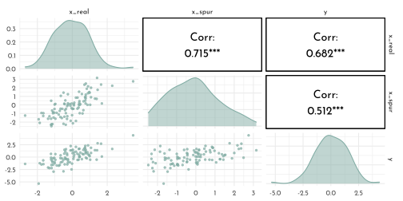
model_spurious <- quap(
flist = alist(
y ~ dnorm(mu, sigma),
mu <- alpha + beta_r * x_real + beta_s * x_spur,
alpha ~ dnorm(0, .2),
beta_r ~ dnorm(0, .5),
beta_s ~ dnorm(0, .5),
sigma ~ dexp(1)
),
data = data_spurious
)
precis(model_spurious) %>%
as.matrix() %>%
round(digits = 2) %>%
knitr::kable()| mean | sd | 5.5% | 94.5% | |
|---|---|---|---|---|
| alpha | 0.09 | 0.09 | -0.06 | 0.24 |
| beta_r | 0.87 | 0.14 | 0.64 | 1.10 |
| beta_s | 0.09 | 0.11 | -0.09 | 0.27 |
| sigma | 1.06 | 0.07 | 0.94 | 1.17 |
Note, how the estimated mean for beta_s is close to 0 (0.09) – despite the correlation shown above 🤔`.
6.2.1.3 Counterfactual Plots
model_counterfactual <- quap(
flist = alist(
# A -> D <- M
divorce_std ~ dnorm( mu, sigma ) ,
mu <- alpha + beta_M * marriage_std + beta_A * median_age_std,
alpha ~ dnorm( 0, 0.2 ),
beta_A ~ dnorm( 0, 0.5 ),
beta_M ~ dnorm( 0, 0.5 ),
sigma ~ dexp( 1 ),
# A -> M
marriage_std ~ dnorm( mu_M, sigma_M ),
mu_M <- alpha_M + beta_AM * median_age_std,
alpha_M ~ dnorm( 0, 0.2 ),
beta_AM ~ dnorm( 0, 0.5 ),
sigma_M ~ dexp(1)
),
data = data_waffle
)
precis(model_counterfactual) %>%
as.matrix() %>%
round(digits = 2) %>%
knitr::kable()| mean | sd | 5.5% | 94.5% | |
|---|---|---|---|---|
| alpha | 0.00 | 0.10 | -0.16 | 0.16 |
| beta_A | -0.61 | 0.15 | -0.85 | -0.37 |
| beta_M | -0.07 | 0.15 | -0.31 | 0.18 |
| sigma | 0.79 | 0.08 | 0.66 | 0.91 |
| alpha_M | 0.00 | 0.09 | -0.14 | 0.14 |
| beta_AM | -0.69 | 0.10 | -0.85 | -0.54 |
| sigma_M | 0.68 | 0.07 | 0.57 | 0.79 |
Note, that marriage_std and median_age_std are strongly negatively correlated (-0.69)
A_seq <- seq(-2, 2, length.out = 30)
unpack_sim <- function(x, seq = A_seq){
nms <- names(x)
purrr::map(.x = nms, .f = function(y, x, seq_in = seq){
x[[y]] %>%
as_tibble() %>%
set_names(nm = seq_along(seq_in)) %>%
pivot_longer(cols = everything(),
names_to = "row_idx",
values_to = "value") %>%
mutate(parameter = y)
}, x = x) %>%
purrr::reduce(bind_rows)
}
data_sim <- sim(fit = model_counterfactual,
data = tibble(median_age_std = A_seq),
vars = c("marriage_std", "divorce_std")) %>%
unpack_sim()
data_sim_pi <- data_sim %>%
group_by(row_idx, parameter) %>%
summarise(mean = mean(value),
PI_lower = PI(value)[1],
PI_upper = PI(value)[2]) %>%
ungroup() %>%
mutate(row_idx = as.numeric(row_idx),
median_age_std = A_seq[row_idx]) %>%
arrange(parameter, median_age_std)
data_sim_pi %>%
ggplot() +
geom_smooth(aes(x = median_age_std, y = mean, ymin = PI_lower, ymax = PI_upper,
color = parameter, fill = after_scale(clr_alpha(color))),
stat = "identity", size = .4) +
scale_color_manual(values = c(clr0d, clr3), guide = "none") +
labs(y = "counterfactual value", title = "Counterfactual effects of age at marriage on") +
facet_wrap(parameter ~ .)
Numerical operations (eg. simulating the causal effect of raising the median age of marriage from 20 to 30):
A_seq2 <- (c(20, 30) - mean(data_waffle$MedianAgeMarriage)) / sd(data_waffle$MedianAgeMarriage)
data_sim_num <- sim(fit = model_counterfactual,
data = tibble(median_age_std = A_seq2),
vars = c("marriage_std", "divorce_std")) %>%
unpack_sim(seq = A_seq2)
data_sim_num %>%
filter(parameter == "divorce_std") %>%
dplyr::select(-parameter) %>%
mutate(pair = (row_number() + 1) %/% 2) %>%
pivot_wider(names_from = row_idx, values_from = value) %>%
mutate(effect = `2` - `1`) %>%
summarise(mean = mean(effect))#> # A tibble: 1 × 1
#> mean
#> <dbl>
#> 1 -4.59…A change of four and a half standard deviations is quite extreme!
M_seq <- A_seq
data_sim_M <- sim(fit = model_counterfactual,
data = tibble(marriage_std = M_seq,
median_age_std = 0),
vars = c("divorce_std")) %>%
as_tibble() %>%
set_names(nm = seq_along(M_seq)) %>%
pivot_longer(cols = everything(),
names_to = "row_idx",
values_to = "divorce_std")
data_sim_M_pi <- data_sim_M %>%
group_by(row_idx) %>%
summarise(mean = mean(divorce_std),
PI_lower = PI(divorce_std)[1],
PI_upper = PI(divorce_std)[2]) %>%
ungroup() %>%
mutate(row_idx = as.numeric(row_idx),
marriage_std = M_seq[row_idx])
data_sim_M_pi %>%
ggplot() +
geom_smooth(aes(x = marriage_std, y = mean, ymin = PI_lower, ymax = PI_upper),
color = clr1, fill = fll1,
stat = "identity", size = .4) +
scale_color_manual(values = c(clr0d, clr3), guide = "none") +
labs(y = "counterfactual value",
title = "Counterfactual effects of marriage rate on divorce rate") +
lims(y = c(-2, 2))
6.3 Masked relationship
Loading the milk data
data(milk)
data_milk <- milk %>%
filter(complete.cases(.)) %>%
as_tibble() %>%
mutate(`mass.log` = log(mass),
across(.cols = c(`kcal.per.g`, `neocortex.perc`, `mass.log`),
.fns = standardize,
.names = "{str_remove_all(.col, '\\\\..*')}_std"))
data_milk %>%
precis() %>%
as.matrix() %>%
as.data.frame() %>%
filter(!is.na(mean)) %>%
mutate(across(.cols = mean:`94.5%`, function(x){round(as.numeric(x), digits = 2)})) %>%
knitr::kable()| mean | sd | 5.5% | 94.5% | histogram | |
|---|---|---|---|---|---|
| kcal.per.g | 0.66 | 0.17 | 0.47 | 0.93 | ▇▂▁▁▁▂▁▁▁▁▁ |
| perc.fat | 36.06 | 14.71 | 15.08 | 54.45 | ▂▁▁▂▃▃▂▅▃▁▇▂ |
| perc.protein | 16.26 | 5.60 | 9.28 | 23.79 | ▂▅▅▅▅▂▂▅▇▂ |
| perc.lactose | 47.68 | 13.59 | 30.35 | 68.31 | ▂▇▅▅▂▇▅▁▅▂ |
| mass | 16.64 | 23.58 | 0.30 | 57.89 | ▇▁▁▁▁▁▁▁ |
| neocortex.perc | 67.58 | 5.97 | 58.41 | 75.59 | ▂▁▂▅▁▅▅▅▇▅▂▂ |
| mass.log | 1.50 | 1.93 | -1.26 | 4.05 | ▂▁▂▂▂▂▅▂▇▁▂▂▅▅ |
| kcal_std | 0.00 | 1.00 | -1.09 | 1.55 | ▃▇▁▃▁▂▂ |
| neocortex_std | 0.00 | 1.00 | -1.54 | 1.34 | ▁▁▂▃▁▇▃▂ |
| mass_std | 0.00 | 1.00 | -1.43 | 1.32 | ▁▂▂▃▃▁▇ |
6.3.1 Bi-variate models
Neocortex effect on caloric content of milk \[ \begin{array}{cccr} K_i & {\sim} & Normal(\mu_i, \sigma) & \textrm{[likelihood]}\\ \mu_i & = & \alpha + \beta_{N} N_{i} & \textrm{[linear model]}\\ \alpha & \sim & Normal(0, 0.2) & \textrm{[$\alpha$ prior]}\\ \beta_{N} & \sim & Normal(0, 0.5) & \textrm{[$\beta_N$ prior]}\\ \sigma & \sim & Exponential(1) & \textrm{[$\sigma$ prior]} \end{array} \]
Mothers weight effect on caloric content of milk \[ \begin{array}{cccr} K_i & {\sim} & Normal(\mu_i, \sigma) & \textrm{[likelihood]}\\ \mu_i & = & \alpha + \beta_{M} M_{i} & \textrm{[linear model]}\\ \alpha & \sim & Normal(0, 0.2) & \textrm{[$\alpha$ prior]}\\ \beta_{M} & \sim & Normal(0, 0.5) & \textrm{[$\beta_M$ prior]}\\ \sigma & \sim & Exponential(1) & \textrm{[$\sigma$ prior]} \end{array} \]
Model implementation (neocortex, draft)
model_milk_draft <- quap(
flist = alist(
kcal_std ~ dnorm(mu, sigma),
mu <- alpha + beta_N * neocortex_std,
alpha ~ dnorm(0, 1),
beta_N ~ dnorm(0, 1),
sigma ~ dexp(1)
),
data = data_milk
)
prior_milk_draft <- extract.prior(model_milk_draft) %>%
as_tibble()
seq_prior <- c(-2, 2)
prior_prediction_milk_draft <- link(model_milk_draft,
post = prior_milk_draft,
data = tibble(neocortex_std = seq_prior)) %>%
as_tibble() %>%
set_names(nm = seq_prior)
p_draft <- prior_prediction_milk_draft %>%
filter(row_number() <= 50) %>%
ggplot() +
geom_segment(aes(x = -2, xend = 2, y = `-2`, yend = `2`), alpha = .6, color = clr0d)Model implementation (neocortex)
model_milk_cortex <- quap(
flist = alist(
kcal_std ~ dnorm(mu, sigma),
mu <- alpha + beta_N * neocortex_std,
alpha ~ dnorm(0, .2),
beta_N ~ dnorm(0, .5),
sigma ~ dexp(1)
),
data = data_milk
)
precis(model_milk_cortex) %>%
as.matrix() %>%
round(digits = 2) %>%
knitr::kable()| mean | sd | 5.5% | 94.5% | |
|---|---|---|---|---|
| alpha | 0.00 | 0.15 | -0.24 | 0.24 |
| beta_N | 0.13 | 0.21 | -0.21 | 0.47 |
| sigma | 0.93 | 0.15 | 0.69 | 1.18 |
prior_milk_cortex <- extract.prior(model_milk_cortex) %>%
as_tibble()
prior_prediction_milk_cortex <- link(model_milk_cortex,
post = prior_milk_cortex,
data = tibble(neocortex_std = seq_prior)) %>%
as_tibble() %>%
set_names(nm = seq_prior)
p_cortex <- prior_prediction_milk_cortex %>%
filter(row_number() <= 50) %>%
ggplot() +
geom_segment(aes(x = -2, xend = 2, y = `-2`, yend = `2`),
alpha = .6, color = clr0d)p_draft + p_cortex &
coord_cartesian(xlim = c(-2, 2),
ylim = c(-2, 2)) &
labs(x = "neocortex_std", y = "kcal_std")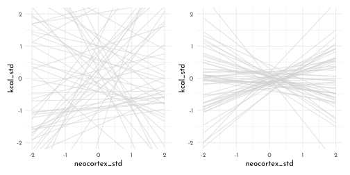
seq_cortex <- seq(min(data_milk$neocortex_std) - .15, max(data_milk$neocortex_std) + .15, length.out = 51)
model_milk_cortex_posterior_prediction_samples <- link(model_milk_cortex,
data = data.frame(neocortex_std = seq_cortex)) %>%
as_tibble() %>%
set_names(nm = seq_cortex) %>%
pivot_longer(cols = everything(),
names_to = "neocortex_std",
values_to = "kcal_std") %>%
mutate(neocortex_std = as.numeric(neocortex_std))
model_milk_cortex_posterior_prediction_pi <- model_milk_cortex_posterior_prediction_samples %>%
group_by(neocortex_std) %>%
summarise(mean = mean(kcal_std),
PI_lower = PI(kcal_std)[1],
PI_upper = PI(kcal_std)[2]) %>%
ungroup()
p_cortex <- ggplot(mapping = aes(x = neocortex_std)) +
geom_smooth(data = model_milk_cortex_posterior_prediction_pi, stat = "identity",
aes(y = mean, ymin = PI_lower, ymax = PI_upper),
color = clr2, fill = fll2, size = .2) +
geom_point(data = data_milk, aes(y = kcal_std), color = rgb(0,0,0,.5), size = 1.6) +
labs(x = "neocprtex_std", y = "kcal_std")Model implementation (mothers weight)
model_milk_weight <- quap(
flist = alist(
kcal_std ~ dnorm(mu, sigma),
mu <- alpha + beta_M * mass_std,
alpha ~ dnorm(0, .2),
beta_M ~ dnorm(0, .5),
sigma ~ dexp(1)
),
data = data_milk
)
precis(model_milk_weight) %>%
as.matrix() %>%
round(digits = 2) %>%
knitr::kable()| mean | sd | 5.5% | 94.5% | |
|---|---|---|---|---|
| alpha | 0.00 | 0.15 | -0.23 | 0.23 |
| beta_M | -0.30 | 0.20 | -0.62 | 0.03 |
| sigma | 0.89 | 0.15 | 0.65 | 1.12 |
seq_weight <- seq(min(data_milk$mass_std) - .15, max(data_milk$mass_std) + .15, length.out = 51)
model_milk_weight_posterior_prediction_samples <- link(model_milk_weight,
data = data.frame(mass_std = seq_weight)) %>%
as_tibble() %>%
set_names(nm = seq_weight) %>%
pivot_longer(cols = everything(),
names_to = "mass_std",
values_to = "kcal_std") %>%
mutate(mass_std = as.numeric(mass_std))
model_milk_weight_posterior_prediction_pi <- model_milk_weight_posterior_prediction_samples %>%
group_by(mass_std) %>%
summarise(mean = mean(kcal_std),
PI_lower = PI(kcal_std)[1],
PI_upper = PI(kcal_std)[2]) %>%
ungroup()
p_weight <- ggplot(mapping = aes(x = mass_std)) +
geom_smooth(data = model_milk_weight_posterior_prediction_pi, stat = "identity",
aes(y = mean, ymin = PI_lower, ymax = PI_upper),
color = clr2, fill = fll2, size = .2) +
geom_point(data = data_milk, aes(y = kcal_std), color = rgb(0,0,0,.5), size = 1.6) +
labs(x = "mass_std", y = "kcal_std")p_cortex + p_weight
Model implementation (necocortex and mothers weight)
\[ \begin{array}{cccr} K_i & {\sim} & Normal(\mu_i, \sigma) & \textrm{[likelihood]}\\ \mu_i & = & \alpha + \beta_{N} N_{i} + \beta_{M} M_{i} & \textrm{[linear model]}\\ \alpha & \sim & Normal(0, 0.2) & \textrm{[$\alpha$ prior]}\\ \beta_{N} & \sim & Normal(0, 0.5) & \textrm{[$\beta_N$ prior]}\\ \beta_{M} & \sim & Normal(0, 0.5) & \textrm{[$\beta_M$ prior]}\\ \sigma & \sim & Exponential(1) & \textrm{[$\sigma$ prior]} \end{array} \]
model_milk_multi <- quap(
flist = alist(
kcal_std ~ dnorm(mu, sigma),
mu <- alpha + beta_N * neocortex_std + beta_M * mass_std,
alpha ~ dnorm(0, .2),
beta_N ~ dnorm(0, .5),
beta_M ~ dnorm(0, .5),
sigma ~ dexp(1)
),
data = data_milk
)
precis(model_milk_multi) %>%
as.matrix() %>%
round(digits = 2) %>%
knitr::kable()| mean | sd | 5.5% | 94.5% | |
|---|---|---|---|---|
| alpha | 0.00 | 0.13 | -0.20 | 0.20 |
| beta_N | 0.64 | 0.23 | 0.27 | 1.01 |
| beta_M | -0.75 | 0.23 | -1.12 | -0.37 |
| sigma | 0.69 | 0.12 | 0.49 | 0.88 |
ct_milk <- coeftab(model_milk_cortex, model_milk_weight, model_milk_multi,
se = TRUE)
plot_coeftab(ct_milk)
data_milk %>%
dplyr::select(kcal_std, neocortex_std, mass_std) %>%
ggpairs(lower = list(continuous = wrap(ggally_points, colour = clr2, size = .9, alpha = .7)),
diag = list(continuous = wrap("densityDiag", fill = fll2, color = clr2, adjust = 1)),
upper = list(continuous = wrap(ggally_cor, size = 5, color = "black", family = "Josefin sans")))
dag1 <- dagify(
K ~ M + N,
N ~ M,
exposure = "M",
outcome = "K") %>%
tidy_dagitty(.dagitty = .,layout = tibble(x = c(0,1,.5), y = c(1,1, .4))) %>%
mutate(stage = if_else(name == "K", "response",
if_else(name %in% c("M", "N"),
"predictor", "confounds")))
dag2 <- dagify(
K ~ M + N,
M ~ N,
exposure = "M",
outcome = "K") %>%
tidy_dagitty(.dagitty = .,layout = tibble(x = c(0,1,.5), y = c(1,1, .4))) %>%
mutate(stage = if_else(name == "K", "response",
if_else(name %in% c("M", "N"),
"predictor", "confounds")))
dag3 <- dagify(
K ~ M + N,
M ~ U,
N ~ U,
exposure = "M",
outcome = "K") %>%
tidy_dagitty(.dagitty = .,layout = tibble(x = c(0,1,.5, .5), y = c(1,1, 1,.4))) %>%
mutate(stage = if_else(name == "K", "response",
if_else(name %in% c("M", "N"),
"predictor", "confounds")))
plot_dag(dag1, clr_in = clr3) +
plot_dag(dag2, clr_in = clr3) +
plot_dag(dag3, clr_in = clr3) +
plot_layout(nrow = 1) +
plot_annotation(tag_levels = "a") &
scale_y_continuous(limits = c(.35, 1.05)) &
coord_equal() &
theme(plot.tag = element_text(family = fnt_sel))
Counterfactual plots for DAG c)
data_sim_mass <- link(fit = model_milk_multi,
data = tibble(mass_std = 0,
neocortex_std = seq_cortex),
vars = c("kcal_std")) %>%
as_tibble() %>%
set_names(nm = seq_along(seq_cortex)) %>%
pivot_longer(cols = everything(),
names_to = "row_idx",
values_to = "kcal_std")
data_sim_mass_pi <- data_sim_mass %>%
group_by(row_idx) %>%
summarise(mean = mean(kcal_std),
PI_lower = PI(kcal_std)[1],
PI_upper = PI(kcal_std)[2]) %>%
ungroup() %>%
mutate(row_idx = as.numeric(row_idx),
neocortex_std = seq_cortex[row_idx])
p_mass <- data_sim_mass_pi %>%
ggplot() +
geom_smooth(aes(x = neocortex_std, y = mean, ymin = PI_lower, ymax = PI_upper),
color = clr2, fill = fll2,
stat = "identity", size = .4) +
scale_color_manual(values = c(clr0d, clr3), guide = "none") +
labs(y = "counterfactual kcal",
title = "kcal at mass_std = 0") data_sim_cortex <- link(fit = model_milk_multi,
data = tibble(mass_std = seq_weight,
neocortex_std = 0),
vars = c("kcal_std")) %>%
as_tibble() %>%
set_names(nm = seq_along(seq_weight)) %>%
pivot_longer(cols = everything(),
names_to = "row_idx",
values_to = "kcal_std")
data_sim_cortex_pi <- data_sim_cortex %>%
group_by(row_idx) %>%
summarise(mean = mean(kcal_std),
PI_lower = PI(kcal_std)[1],
PI_upper = PI(kcal_std)[2]) %>%
ungroup() %>%
mutate(row_idx = as.numeric(row_idx),
mass_std = seq_weight[row_idx])
p_cortex <- data_sim_cortex_pi %>%
ggplot() +
geom_smooth(aes(x = mass_std, y = mean, ymin = PI_lower, ymax = PI_upper),
color = clr2, fill = fll2,
stat = "identity", size = .4) +
scale_color_manual(values = c(clr0d, clr3), guide = "none") +
labs(y = "counterfactual kcal",
title = "kcal at neocortex_std = 0") p_mass + p_cortex &
coord_cartesian(ylim = c(-1, 2))
6.3.2 Simulate a masking relationship
DAG a) (\(M \rightarrow K \leftarrow N \leftarrow M\))
n <- 100
data_milk_sim1 <- tibble(mass_std = rnorm(n = n),
neocortex_std = rnorm(n = n, mean = mass_std),
kcal_std = rnorm(n = n, mean = neocortex_std - mass_std))data_milk_sim1 %>%
dplyr::select(kcal_std, neocortex_std, mass_std) %>%
ggpairs(lower = list(continuous = wrap(ggally_points, colour = clr0d, size = .9, alpha = .7)),
diag = list(continuous = wrap("densityDiag", fill = fll0, color = clr0d, adjust = 1)),
upper = list(continuous = wrap(ggally_cor, size = 5, color = "black", family = "Josefin sans")))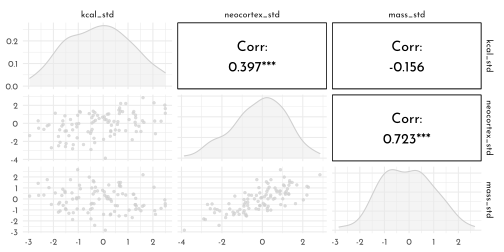
DAG b) (\(N \rightarrow M \rightarrow K \leftarrow N\))
data_milk_sim2 <- tibble(neocortex_std = rnorm(n = n),
mass_std = rnorm(n = n, mean = neocortex_std),
kcal_std = rnorm(n = n, mean = neocortex_std - mass_std))DAG c) (\(U \rightarrow N \rightarrow M \rightarrow K \leftarrow N \leftarrow U\))
data_milk_sim3 <- tibble(unsampled = rnorm(n = n),
neocortex_std = rnorm(n = n, mean = unsampled),
mass_std = rnorm(n = n, mean = unsampled),
kcal_std = rnorm(n = n, mean = neocortex_std - mass_std))model_milk_cortex_sim <- quap(
flist = alist(
kcal_std ~ dnorm(mu, sigma),
mu <- alpha + beta_N * neocortex_std,
alpha ~ dnorm(0, .2),
beta_N ~ dnorm(0, .5),
sigma ~ dexp(1)
),
data = data_milk_sim1
)
model_milk_weight_sim <- quap(
flist = alist(
kcal_std ~ dnorm(mu, sigma),
mu <- alpha + beta_M * mass_std,
alpha ~ dnorm(0, .2),
beta_M ~ dnorm(0, .5),
sigma ~ dexp(1)
),
data = data_milk_sim1
)
model_milk_multi_sim <- quap(
flist = alist(
kcal_std ~ dnorm(mu, sigma),
mu <- alpha + beta_N * neocortex_std + beta_M * mass_std,
alpha ~ dnorm(0, .2),
beta_N ~ dnorm(0, .5),
beta_M ~ dnorm(0, .5),
sigma ~ dexp(1)
),
data = data_milk_sim1
)ct_milk_sim <- coeftab(model_milk_cortex_sim, model_milk_weight_sim, model_milk_multi_sim,
se = TRUE)
plot_coeftab(ct_milk_sim)
Computing the Marcov Equivalence Set
dag_milk <- dagitty("dag{
M -> K <- N
M -> N}")
coordinates(dag_milk) <- list( x = c( M = 0, N = 1, K = .5),
y = c( M = 1, N = 1, K = .3))
dag_milk %>%
node_equivalent_dags() %>%
mutate(stage = "predictor") %>%
plot_dag() +
coord_cartesian(xlim = c(-.1, 1.1),
ylim = c(.2, 1.1))+
facet_wrap(~ dag)
6.4 Categorical Variables
6.4.1 Indicator vs. Index variable (binary categories)
Taking gender into account for the height model (but not caring about weight).
data(Howell1)
data_height <- as_tibble(Howell1) %>%
mutate(sex = if_else(male == 1, 2, 1))Modeling as dummy/indicator variable \[ \begin{array}{cccr} h_i & {\sim} & Normal(\mu_i, \sigma) & \textrm{[likelihood]}\\ \mu_i & = & \alpha + \beta_{m} m_{i} & \textrm{[linear model]}\\ \alpha & \sim & Normal(178, 20) & \textrm{[$\alpha$ prior]}\\ \beta_{m} & \sim & Normal(0, 10) & \textrm{[$\beta_N$ prior]}\\ \sigma & \sim & Uniform(0,50) & \textrm{[$\sigma$ prior]} \end{array} \]
Modeling as index variable \[ \begin{array}{ccccr} h_i & {\sim} & Normal(\mu_i, \sigma) & &\textrm{[likelihood]}\\ \mu_i & = & \alpha_{\textrm{sex}[i]} & &\textrm{[linear model]}\\ \alpha_j & \sim & Normal(178, 20) & \textrm{for}~j = 1..2 & \textrm{[$\alpha$ prior]}\\ \sigma & \sim & Uniform(0,50) & &\textrm{[$\sigma$ prior]} \end{array} \]
Demonstrating that in the indicator variable approach, the uncertainty of estimates is higher for the male type (coded as 1), since this one is influenced by the uncertainty of two priors:
indicator_prior <- tibble(mu_female = rnorm(1e4, 178, 20),
mu_male = rnorm(1e4, 178, 20) + rnorm(1e4, 0, 10))
indicator_prior %>%
precis() %>%
as.matrix() %>%
knitr::kable()| mean | sd | 5.5% | 94.5% | histogram | |
|---|---|---|---|---|---|
| mu_female | 177.7964 | 19.99779 | 145.6110 | 209.8597 | ▁▁▁▁▂▃▇▇▇▅▃▁▁▁▁ |
| mu_male | 177.5124 | 22.49842 | 141.7337 | 213.0894 | ▁▁▁▃▇▇▂▁▁▁ |
indicator_long <- indicator_prior %>%
pivot_longer(cols = everything(),
names_to = "sex",
values_to = "height",
names_transform = list(sex = function(str){str_remove(string = str, "mu_")}))
ggplot(indicator_long) +
geom_density(data = indicator_long %>% dplyr::select(-sex),
aes(x = height, y = ..count..), color = clr0d, fill = fll0) +
geom_density(aes(x = height, y = ..count..,
color = sex, fill = after_scale(clr_alpha(color)))) +
facet_wrap(sex ~ . ) +
scale_color_manual(values = c(clr1, clr2), guide = "none")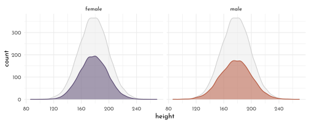
Implementing the index variable approach:
model_hight <- quap(
flist = alist(
height ~ dnorm(mu, sigma),
mu <- alpha[sex],
alpha[sex] ~ dnorm(178, 20),
sigma ~ dunif(0,50)
),
data = data_height
)
precis(model_hight, depth = 2) %>%
as.matrix() %>%
round(digits = 2) %>%
knitr::kable()| mean | sd | 5.5% | 94.5% | |
|---|---|---|---|---|
| alpha[1] | 134.91 | 1.61 | 132.34 | 137.48 |
| alpha[2] | 142.58 | 1.70 | 139.86 | 145.29 |
| sigma | 27.31 | 0.83 | 25.99 | 28.63 |
hight_posterior_samples <- extract.samples(model_hight) %>%
as_tibble() %>%
mutate(diff_sex = alpha[ ,1] - alpha[ ,2] )The expected difference between the considered types is called a contrast:
hight_posterior_samples %>%
precis() %>%
as.matrix() %>%
knitr::kable()| mean | sd | 5.5% | 94.5% | histogram | |
|---|---|---|---|---|---|
| sigma | 27.307086 | 0.822027 | 25.99673 | 28.620850 | ▁▁▁▁▁▁▃▅▇▇▃▂▁▁▁ |
| alpha.1 | 134.933243 | 1.599303 | 132.39721 | 137.457066 | ▁▁▁▂▅▇▇▅▂▁▁▁▁ |
| alpha.2 | 142.592035 | 1.708900 | 139.84870 | 145.308164 | ▁▁▁▁▁▂▃▇▇▇▃▂▁▁▁ |
| diff_sex | -7.658793 | 2.341238 | -11.38310 | -3.867645 | ▁▁▁▂▇▇▃▁▁▁ |
p_contrast1 <- hight_posterior_samples %>%
ggplot() +
geom_density(aes(x = alpha[,1], color = "female", fill = after_scale(clr_alpha(color))))+
geom_density(aes(x = alpha[,2], color = "male", fill = after_scale(clr_alpha(color)))) +
geom_errorbarh(data = tibble(start = median(hight_posterior_samples$alpha[,1]),
end = median(hight_posterior_samples$alpha[,2])),
aes(y = 0, xmin = start, xmax = end), height = .01) +
scale_color_manual(values = c(clr1, clr2), guide = "none") +
lims(y = c(-.01,.25))+
labs(x = "height") +
theme(axis.title.y = element_blank(),
axis.text.y = element_blank())
p_contrast2 <- hight_posterior_samples %>%
ggplot() +
geom_density(aes(x = alpha[,2] - alpha[,1]), color = clr0d, fill = fll0) +
labs(x = "contrast height(male-female)") +
lims(y = c(-.01,.25))+
theme(axis.title.y = element_blank(),
axis.text.y = element_blank())
p_contrast1 + p_contrast2 + plot_layout(widths = c(1,.66))
6.4.2 Multiple categories
Taking the broad taxonomic unit into account for the milk model (but not caring about neocortex od weight).
houses <- c("Gryffindor", "Hufflepuff", "Ravenclaw", "Slytherin")
set.seed(63)
data_milk_clade <- milk %>%
as_tibble() %>%
mutate(kcal_std = standardize(`kcal.per.g`),
clade_id = as.integer(clade),
house_id = sample(rep(1:4, each = 8), size = length(clade)),
house = houses[house_id])\[ \begin{array}{ccccr} K_i & {\sim} & Normal(\mu_i, \sigma) & &\textrm{[likelihood]}\\ \mu_i & = & \alpha_{\textrm{CLADE}[i]} & &\textrm{[linear model]}\\ \alpha_j & \sim & Normal(0, 0.5) & \textrm{for}~j = 1..4 & \textrm{[$\alpha$ prior]}\\ \sigma & \sim & Exponential(1) & &\textrm{[$\sigma$ prior]} \end{array} \]
model_milk_clade <- quap(
flist = alist(
kcal_std ~ dnorm(mu, sigma),
mu <- alpha[clade_id],
alpha[clade_id] ~ dnorm(0, 0.5),
sigma ~ dexp(1)
),
data = data_milk_clade
)precis(model_milk_clade, depth = 2, pars = "alpha") %>%
as_tibble_rn() %>%
mutate(clade_id = str_remove_all(param, pattern = "[a-z\\[\\]]*") %>% as.integer(),
clade = fct_reorder(levels(data_milk$clade)[clade_id], clade_id)) %>%
ggplot(aes(y = clade)) +
geom_vline(xintercept = 0, lty = 3, color = rgb(0,0,0,.6)) +
geom_linerange(aes(xmin = `5.5%`,
xmax =`94.5%`), color = clr0d, fill = clr0) +
geom_point(aes(x = mean),
shape = 21, size = 3, color = clr0d, fill = clr0) +
scale_y_discrete("", limits = rev(levels(data_milk$clade))) +
labs(x = "expected kcal_std")
adding another categorical variable:
\[ \begin{array}{ccccr} K_i & {\sim} & Normal(\mu_i, \sigma) & &\textrm{[likelihood]}\\ \mu_i & = & \alpha_{\textrm{CLADE}[i]} + \alpha_{\textrm{HOUSE}[i]} & &\textrm{[linear model]}\\ \alpha_{\textrm{CLADE},j} & \sim & Normal(0, 0.5) & \textrm{for}~j = 1..4 & \textrm{[$\alpha_{\textrm{CLADE}}$ prior]}\\ \alpha_{\textrm{HOUSE},j} & \sim & Normal(0, 0.5) & \textrm{for}~j = 1..4 & \textrm{[$\alpha_{\textrm{CLADE}}$ prior]}\\ \sigma & \sim & Exponential(1) & &\textrm{[$\sigma$ prior]} \end{array} \]
model_milk_house <- quap(
flist = alist(
kcal_std ~ dnorm(mu, sigma),
mu <- alpha_clade[clade_id] + alpha_house[house_id],
alpha_clade[clade_id] ~ dnorm(0, 0.5),
alpha_house[house_id] ~ dnorm(0, 0.5),
sigma ~ dexp(1)
),
data = data_milk_clade
)precis(model_milk_house, depth = 2, pars = "alpha") %>%
as_tibble_rn() %>%
mutate(type = str_remove(param, pattern = "alpha_") %>% str_remove("\\[[0-9]\\]"),
idx = str_extract(param, "[0-9]") %>% as.integer(),
name = if_else(type == "clade",
levels(data_milk$clade)[idx],
houses[idx])) %>%
ggplot(aes(y = name, color = type)) +
geom_vline(xintercept = 0, lty = 3, color = rgb(0,0,0,.6)) +
geom_linerange(aes(xmin = `5.5%`,
xmax =`94.5%`)) +
geom_point(aes(x = mean, fill = after_scale(clr_lighten(color))),
shape = 21, size = 3 ) +
scale_color_manual(values = c(clade = clr0d, house = clr3), guide = "none") +
facet_grid(type ~ . , scales = "free_y", switch = "y") +
labs(x = "expected kcal_std") +
theme(axis.title.y = element_blank(),
strip.placement = "outside")
library(rlang)
chapter5_models <- env(
data_waffle = data_waffle,
model_age = model_age,
model_marriage = model_marriage,
model_waffle = model_waffle,
model_multiple = model_multiple,
data_divorce_sim = data_divorce_sim,
model_multiple_sim = model_multiple_sim,
model_age_sim = model_age_sim,
model_marriage_sim = model_marriage_sim,
model_multiple_sim_codep = model_multiple_sim_codep,
model_age_sim_codep = model_age_sim_codep,
model_marriage_sim_codep = model_marriage_sim_codep,
pred_res_marriage = pred_res_marriage,
residuals_marriage = residuals_marriage,
pred_res_marriage_mu = pred_res_marriage_mu,
pred_res_age = pred_res_age,
residuals_age = residuals_age,
pred_res_age_mu = pred_res_age_mu,
data_spurious = data_spurious,
model_spurious = model_spurious,
model_counterfactual = model_counterfactual,
data_milk = data_milk,
model_milk_draft = model_milk_draft,
model_milk_cortex = model_milk_cortex,
model_milk_weight = model_milk_weight,
model_milk_multi = model_milk_multi,
data_milk_sim1 = data_milk_sim1,
model_milk_cortex_sim = model_milk_cortex_sim,
model_milk_weight_sim = model_milk_weight_sim,
model_milk_multi_sim = model_milk_multi_sim,
data_height = data_height,
model_hight = model_hight,
data_milk_clade = data_milk_clade,
model_milk_clade = model_milk_clade,
model_milk_house = model_milk_house
)
write_rds(chapter5_models, "envs/chapter5_models.rds")6.5 Homework
E1
\[ \begin{array}{ccclr} 1) & \mu_i & = & \alpha + \beta x_{i} &\textrm{[simple linear regression]}\\ 2) & \mu_i & = & \beta_{x} x_{i} + \beta_{z} z_{i} &\textrm{[multiple linear regression]}\\ 3) & \mu_i & = & \alpha + \beta (x_{i} - z_{i}) &\textrm{[simple linear regression]}\\ 4) & \mu_i & = & \alpha + \beta_{x} x_{i} + \beta_{z} z_{i} &\textrm{[multiple linear regression]}\\ \end{array} \]
E2
\[ \begin{array}{cclr} d_i & = & \alpha + \beta_{y} y_i + \beta_{p} p_{i}& \textrm{[linear model]}\\ \end{array} \]
E3
\[ \begin{array}{ccclr} 1) & t_i & = & \alpha_{f} + \beta_{ff} f_i & \textrm{[linear model]}\\ 2) & t_i & = & \alpha_{s} + \beta_{ss} s_{i} & \textrm{[linear model]}\\ 3) & t_i & = & \alpha + \beta_{f} f_i + \beta_{s} s_{i} & \textrm{[linear model]}\\ \end{array} \]
- \(\beta_{f} \ge 0\)
- \(\beta_{ss} \ge 0\)
- \(t \sim f\) (\(\beta_{f} \gt \beta_{ff}\))
- \(t \sim s\) (\(\beta_{s} \gt \beta_{ss}\))
- \(f \sim -s\)
E4
- 1), 3), 4) and 5)
(models should contain \(k - 1\) indicator variables)
M1
n <- 100
data_spurious2 <- tibble(u = rnorm(n),
x = rnorm(n, mean = u),
y = rnorm(n, mean = -u),
z = rnorm(n, mean = u) )
data_spurious2 %>%
ggpairs()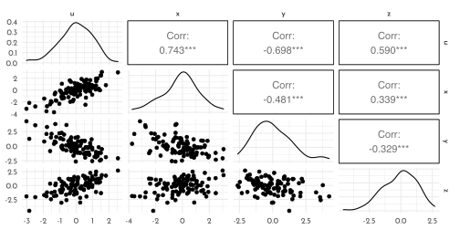
model_spurious2a <- quap(
flist = alist(
z ~ dnorm(mu, sigma),
mu <- alpha + beta_x * x,
alpha ~ dnorm(0, .2),
beta_x ~ dnorm(0, .75),
sigma ~ dexp(1)),
data = data_spurious2
)
model_spurious2b <- quap(
flist = alist(
z ~ dnorm(mu, sigma),
mu <- alpha + beta_y * y,
alpha ~ dnorm(0, .2),
beta_y ~ dnorm(0, .75),
sigma ~ dexp(1)),
data = data_spurious2
)
model_spurious2c <- quap(
flist = alist(
z ~ dnorm(mu, sigma),
mu <- alpha + beta_x * x + beta_y * y,
alpha ~ dnorm(0, .2),
beta_x ~ dnorm(0, .75),
beta_y ~ dnorm(0, .75),
sigma ~ dexp(1)),
data = data_spurious2
)ct_spur <- coeftab(model_spurious2a, model_spurious2b, model_spurious2c,
se = TRUE)
plot_coeftab(ct_spur)
M2
data_masked <- tibble(u = rnorm(n),
x = rnorm(n, mean = u),
y = rnorm(n, mean = u),
z = rnorm(n, mean = x-y) )
data_masked %>%
ggpairs()
model_masked_a <- quap(
flist = alist(
z ~ dnorm(mu, sigma),
mu <- alpha + beta_x * x,
alpha ~ dnorm(0, .2),
beta_x ~ dnorm(0, .75),
sigma ~ dexp(1)),
data = data_masked
)
model_masked_b <- quap(
flist = alist(
z ~ dnorm(mu, sigma),
mu <- alpha + beta_y * y,
alpha ~ dnorm(0, .2),
beta_y ~ dnorm(0, .75),
sigma ~ dexp(1)),
data = data_masked
)
model_masked_c <- quap(
flist = alist(
z ~ dnorm(mu, sigma),
mu <- alpha + beta_x * x + beta_y * y,
alpha ~ dnorm(0, .2),
beta_x ~ dnorm(0, .75),
beta_y ~ dnorm(0, .75),
sigma ~ dexp(1)),
data = data_masked
)ct_masked <- coeftab(model_masked_a, model_masked_b, model_masked_c,
se = TRUE)
plot_coeftab(ct_masked)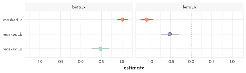
M3
dag <- dagify(
D ~ A,
M ~ A,
exposure = "A",
outcome = "M") %>%
tidy_dagitty(.dagitty = .,layout = tibble(x = c(0,.5,1), y = c(1, .4, 1))) %>%
mutate(stage = if_else(name == "D", "response",
if_else(name %in% c("A", "M"),
"predictor", "confounds")))
plot_dag(dag, clr_in = clr3) +
scale_y_continuous(limits = c(.35, 1.05)) +
coord_equal()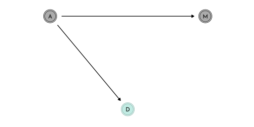
M4
data_waffle_lds <- data_waffle %>%
left_join(read_tsv("data/lds_by_state_2019.tsv")) %>%
mutate(lds_std = standardize(lds_perc),
lds_perc_log10 = log10(lds_perc),
lds_log10_std = standardize(lds_perc_log10))
data_waffle_lds %>%
dplyr::select(lds_perc, lds_perc_log10) %>%
pivot_longer(everything()) %>%
ggplot(aes(x = value)) +
geom_histogram(bins = 10, color = clr0d, fill = fll0) +
facet_wrap(name ~ ., scales = "free")
model_lds <- quap(
flist = alist(
divorce_std ~ dnorm(mu, sigma),
mu <- alpha + beta_age * median_age_std + beta_marriage * marriage_std + beta_lds * lds_log10_std,
alpha ~ dnorm(0, .2),
beta_age ~ dnorm(0, .5),
beta_marriage ~ dnorm(0, .5),
beta_lds ~ dnorm(0, .5),
sigma ~ dexp(1)
),
data = data_waffle_lds
)
precis(model_lds)#> mean sd 5.5% 94.5%
#> alpha 6.262694e-07 0.09382055 -0.1499427 0.14994399
#> beta_age -6.980543e-01 0.15085783 -0.9391543 -0.45695439
#> beta_marriage 7.802884e-02 0.16280138 -0.1821592 0.33821689
#> beta_lds -2.954296e-01 0.14942991 -0.5342475 -0.05661175
#> sigma 7.511933e-01 0.07463517 0.6319118 0.87047467precis(model_lds, depth = 2, pars = "beta") %>%
as_tibble_rn() %>%
mutate(type = str_remove(param, pattern = "beta_")) %>%
ggplot(aes(y = type)) +
geom_vline(xintercept = 0, lty = 3, color = rgb(0,0,0,.6)) +
geom_linerange(aes(xmin = `5.5%`,
xmax =`94.5%`), color = clr0d) +
geom_point(aes(x = mean), color = clr0d, fill = clr0,
shape = 21, size = 3 ) +
theme(axis.title.y = element_blank())
posterior_prediction <- link(model_lds) %>%
as_tibble() %>%
set_names(nm = seq_along(data_waffle$divorce_std)) %>%
pivot_longer(cols = everything(),
names_to = "row_idx",
values_to = "divorce_predicted") %>%
group_by(row_idx) %>%
summarise(divorce_predicted_mean = mean(divorce_predicted),
lower_pi = PI(divorce_predicted)[1],
upper_pi = PI(divorce_predicted)[2]) %>%
ungroup() %>%
mutate(row_idx = as.numeric(row_idx)) %>%
left_join(data_waffle %>% mutate(row_idx = row_number()), . )
posterior_simmulation <- sim(model_lds) %>%
as_tibble() %>%
set_names(nm = seq_along(data_waffle$divorce_std)) %>%
pivot_longer(cols = everything(),
names_to = "row_idx",
values_to = "divorce_predicted") %>%
group_by(row_idx) %>%
summarise(lower_pi = PI(divorce_predicted)[1],
upper_pi = PI(divorce_predicted)[2]) %>%
ungroup() %>%
mutate(row_idx = as.numeric(row_idx)) %>%
left_join(data_waffle %>% mutate(row_idx = row_number()), . )
ggplot(mapping = aes(x = divorce_std)) +
geom_abline(slope = 1, size = .7, lty = 3, color = rgb(0,0,0,.6)) +
geom_linerange(data = posterior_prediction,
aes(ymin = lower_pi, ymax = upper_pi,
color = Loc %in% c("ID", "UT")))+
geom_point(data = posterior_prediction,
aes(y = divorce_predicted_mean,
color = Loc %in% c("ID", "UT"),
fill = after_scale(clr_lighten(color ,.5))),
shape = 21, size = 1.5)+
geom_text(data = posterior_prediction %>% filter(Loc %in% c("ID", "ME", "RI", "UT")),
aes(x = divorce_std - .15, y = divorce_predicted_mean, label = Loc)) +
scale_color_manual(values = c(`TRUE` = clr2, `FALSE` = clr0d), guide = "none")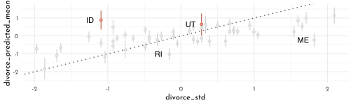
M5
dag1 <- dagify(
O ~ W + E + P,
W ~ P,
E ~ P,
exposure = "P",
outcome = "O") %>%
tidy_dagitty(.dagitty = .,layout = tibble(x = c(0,.5,1, .5), y = c(1,1, 1,.4))) %>%
mutate(stage = if_else(name == "O", "response",
if_else(name %in% c("W", "E", "P"),
"predictor", "confounds")))
plot_dag(dag1, clr_in = clr3) +
# plot_dag(dag2, clr_in = clr3) &
# scale_y_continuous(limits = c(.35, 1.05)) &
coord_equal()
with
- \(o\) as obesity rate
- \(p\) as gasoline price
- \(e\) as money spend on eating out
- \(w\) as average distance walked
\[ \begin{array}{cclr} o_i & \sim & Normal(\mu_i, \sigma) & \textrm{[likelyhood]}\\ \mu_i & = & \alpha_{p} + \beta_{p} p_i & \textrm{[linear model (price only)]}\\ \mu_i & = & \alpha_{w} + \beta_{w} w_i & \textrm{[linear model (walking)]}\\ \mu_i & = & \alpha_{e} + \beta_{e} e_i & \textrm{[linear model (eating out)]}\\ \mu_i & = & \alpha_{m} + \beta_{pp} + \beta_{ww} w_i + p_i + \beta_{ee} e_i & \textrm{[linear model]}\\ \end{array} \]
H1
dagitty('dag{ M -> A -> D }') %>%
impliedConditionalIndependencies()#> D _||_ M | AThis reads as conditional on \(A\), \(D\) is independent from \(M\).
given the results from model_multiple, this seems plausible as the multiple model greatly reduces the effect of beat_M:
precis(model_multiple) %>%
round(digits = 2) %>%
as.matrix() %>%
knitr::kable()| mean | sd | 5.5% | 94.5% | |
|---|---|---|---|---|
| alpha | 0.00 | 0.10 | -0.16 | 0.16 |
| beta_A | -0.61 | 0.15 | -0.85 | -0.37 |
| beta_M | -0.07 | 0.15 | -0.31 | 0.18 |
| sigma | 0.79 | 0.08 | 0.66 | 0.91 |
plot_coeftab(ct) +
scale_color_manual(values = rep(clr0d, 3), guide = "none")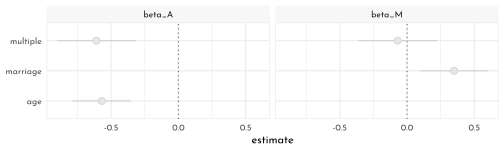
Actually this one is a markov equivalent of the dag investigated in the main text (and all members of that set are consistent with the model):
dag_h1 <- dagitty('dag{ M -> A -> D }')
coordinates(dag_h1) <- list( x = c( M = 0, A = 1, D = .5),
y = c( M = 1, A = 1, D = .3))
dag_h1 %>%
node_equivalent_dags() %>%
mutate(stage = "predictor") %>%
plot_dag() +
coord_equal(xlim = c(-.1, 1.1),
ylim = c(.2, 1.1))+
facet_wrap(~ dag)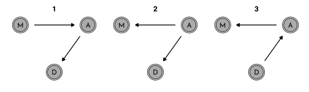
H2
model_counterfactual_marriage <- quap(
flist = alist(
# A -> D
divorce_std ~ dnorm( mu, sigma ) ,
mu <- alpha + beta_A * median_age_std,
alpha ~ dnorm( 0, 0.2 ),
beta_A ~ dnorm( 0, 0.5 ),
sigma ~ dexp( 1 ),
# M -> A
median_age_std ~ dnorm( mu_A, sigma_A ),
mu_A <- alpha_A + beta_MA * marriage_std,
alpha_A ~ dnorm( 0, 0.2 ),
beta_MA ~ dnorm( 0, 0.5 ),
sigma_A ~ dexp(1)
),
data = data_waffle
)
precis(model_counterfactual_marriage) %>%
as.matrix() %>%
round(digits = 2) %>%
knitr::kable()| mean | sd | 5.5% | 94.5% | |
|---|---|---|---|---|
| alpha | 0.00 | 0.10 | -0.16 | 0.16 |
| beta_A | -0.57 | 0.11 | -0.74 | -0.39 |
| sigma | 0.79 | 0.08 | 0.66 | 0.91 |
| alpha_A | 0.00 | 0.09 | -0.14 | 0.14 |
| beta_MA | -0.69 | 0.10 | -0.85 | -0.54 |
| sigma_A | 0.68 | 0.07 | 0.57 | 0.79 |
M_seq <- seq(-2, 2, length.out = 30)
data_sim <- sim(fit = model_counterfactual_marriage,
data = tibble(marriage_std = M_seq),
vars = c("median_age_std", "divorce_std")) %>%
unpack_sim()
data_sim_pi <- data_sim %>%
group_by(row_idx, parameter) %>%
summarise(mean = mean(value),
PI_lower = PI(value)[1],
PI_upper = PI(value)[2]) %>%
ungroup() %>%
mutate(row_idx = as.numeric(row_idx),
marriage_std = M_seq[row_idx]) %>%
arrange(parameter, marriage_std)
data_sim_pi %>%
ggplot() +
geom_smooth(aes(x = marriage_std, y = mean, ymin = PI_lower, ymax = PI_upper,
color = parameter, fill = after_scale(clr_alpha(color))),
stat = "identity", size = .4) +
scale_color_manual(values = c(clr0d, clr3), guide = "none") +
# labs(y = "counterfactual value", title = "Counterfactual effects of age at marriage on") +
facet_wrap(parameter ~ .)
M_seq2 <- c(data_waffle$median_age_std, data_waffle$median_age_std/2)
m_rate_california <- which(data_waffle$Location == "Idaho")
M_seq2 <- c(data_waffle$median_age_std[m_rate_california], data_waffle$median_age_std[m_rate_california]/2)
data_sim2 <- sim(fit = model_counterfactual_marriage,
data = tibble(marriage_std = M_seq2),
vars = c("median_age_std", "divorce_std")) %>%
data.frame() %>%
pivot_longer(cols = everything()) %>%
separate(name, into = c("param", "rn"), sep = '\\.', convert = TRUE) %>%
mutate(group = c("org", "half")[1 + (rn > (length(M_seq2)/2))]) %>%
filter(param == "divorce_std") %>%
dplyr::select(-rn) %>%
# mutate(value = value * sd(data_waffle$Divorce) + mean(data_waffle$Divorce)) %>%
pivot_wider(names_from = group, values_from = value) %>%
unnest() %>%
mutate(diff = half - org)
data_sim2 %>%
ggplot(aes(x = diff)) +
geom_density(fill = fll0, color = clr0d)
data_sim2 %>%
ggplot() +
geom_density(aes(x = org, color = "orgiginal", fill = after_scale(clr_alpha(color)))) +
geom_density(aes(x = half, color = "half", fill = after_scale(clr_alpha(color)))) +
scale_color_manual(values = c(original = clr0d, half = clr3)) +
labs(x = "divorce_std") +
theme(legend.position = "bottom")
mean(data_sim2$diff)#> [1] 0.4360082Halfing a states marriage rate would on average increase the divorce rate by ~ 0 standard deviations.
H3
dag1 <- dagify(
K ~ M + N,
N ~ M,
exposure = "M",
outcome = "K") %>%
tidy_dagitty(.dagitty = .,layout = tibble(x = c(0,1,.5), y = c(1,1,.4))) %>%
mutate(stage = if_else(name == "K", "response",
if_else(name %in% c("M", "N"),
"predictor", "confounds")))
plot_dag(dag1, clr_in = clr3) +
coord_equal()
model_counterfactual_milk <- quap(
flist = alist(
# M -> K <- N
kcal_std ~ dnorm( mu, sigma ) ,
mu <- alpha + beta_MK * mass_std + beta_NK * neocortex_std,
alpha ~ dnorm( 0, 0.2 ),
beta_MK ~ dnorm( 0, 0.5 ),
beta_NK ~ dnorm( 0, 0.5 ),
sigma ~ dexp( 1 ),
# M -> N
neocortex_std ~ dnorm( mu_N, sigma_N ),
mu_N <- alpha_N + beta_MN * mass_std,
alpha_N ~ dnorm( 0, 0.2 ),
beta_MN ~ dnorm( 0, 0.5 ),
sigma_N ~ dexp(1)
),
data = data_milk
)
precis(model_counterfactual_milk) %>%
as.matrix() %>%
round(digits = 2) %>%
knitr::kable()| mean | sd | 5.5% | 94.5% | |
|---|---|---|---|---|
| alpha | 0.00 | 0.13 | -0.20 | 0.20 |
| beta_MK | -0.75 | 0.23 | -1.12 | -0.37 |
| beta_NK | 0.64 | 0.23 | 0.27 | 1.01 |
| sigma | 0.69 | 0.12 | 0.49 | 0.88 |
| alpha_N | 0.00 | 0.12 | -0.19 | 0.19 |
| beta_MN | 0.68 | 0.15 | 0.44 | 0.93 |
| sigma_N | 0.63 | 0.11 | 0.46 | 0.80 |
W_seq <- seq(-2, 2, length.out = 30)
data_sim <- sim(fit = model_counterfactual_milk,
data = tibble(mass_std = W_seq),
vars = c("neocortex_std", "kcal_std")) %>%
unpack_sim()
data_sim_pi <- data_sim %>%
group_by(row_idx, parameter) %>%
summarise(mean = mean(value),
PI_lower = PI(value)[1],
PI_upper = PI(value)[2]) %>%
ungroup() %>%
mutate(row_idx = as.numeric(row_idx),
mass_std = M_seq[row_idx]) %>%
arrange(parameter, mass_std)
data_sim_pi %>%
ggplot() +
geom_smooth(aes(x = mass_std, y = mean, ymin = PI_lower, ymax = PI_upper,
color = parameter, fill = after_scale(clr_alpha(color))),
stat = "identity", size = .4) +
scale_color_manual(values = c(clr0d, clr3), guide = "none") +
# labs(y = "counterfactual value", title = "Counterfactual effects of age at marriage on") +
facet_wrap(parameter ~ .)
M_seq2 <- (log(c(15, 30)) - mean(log(milk$mass))) / sd(log(milk$mass))
data_sim2 <- sim(fit = model_counterfactual_milk,
data = tibble(mass_std = M_seq2),
vars = c("neocortex_std", "kcal_std")) %>%
data.frame() %>%
pivot_longer(cols = everything()) %>%
separate(name, into = c("param", "rn"), sep = '\\.', convert = TRUE) %>%
mutate(group = c("org", "double")[1 + (rn > (length(M_seq2)/2))]) %>%
filter(param == "kcal_std") %>%
dplyr::select(-rn) %>%
# mutate(value = value * sd(data_waffle$Divorce) + mean(data_waffle$Divorce)) %>%
pivot_wider(names_from = group, values_from = value) %>%
unnest() %>%
mutate(diff = double - org)
data_sim2 %>%
ggplot(aes(x = diff)) +
geom_density(fill = fll0, color = clr0d)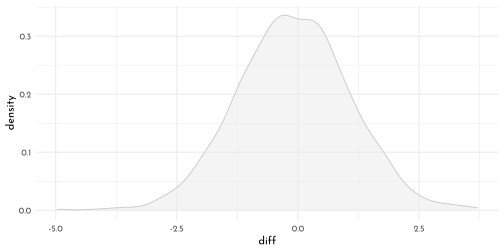
data_sim2 %>%
ggplot() +
geom_density(aes(x = org, color = "orgiginal", fill = after_scale(clr_alpha(color)))) +
geom_density(aes(x = double, color = "double", fill = after_scale(clr_alpha(color)))) +
scale_color_manual(values = c(original = clr0d, double = clr3)) +
labs(x = "kcal_std") +
theme(legend.position = "bottom")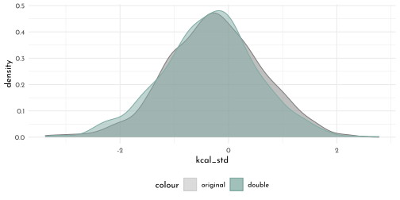
quantile(data_sim2$diff, probs = c(.05, .5, .95))#> 5% 50% 95%
#> -1.9762716 -0.1036398 1.7891183mean(data_sim2$diff)#> [1] -0.0910389Following the paths of the dag to get the causal effect.
To then get to the magnitude of the contrast, scale by max - min.
prec_out <- precis(model_counterfactual_milk)
# ((M -> N) * (M -> K) ) + (M -> K) * delta_input
(prec_out["beta_MN", "mean"] * prec_out["beta_NK", "mean"] + prec_out["beta_MK", "mean"] ) * diff(M_seq2)#> [1] -0.126499H4
data_south <- data_waffle %>%
dplyr::select(Location, South, ends_with("_std"))dag <- dagify(
D ~ M + A + S,
M ~ A,
A ~ S,
exposure = "A",
outcome = "M") %>%
tidy_dagitty(.dagitty = .,
layout = tibble(x = c(0,.5, .5, 1),
y = c(1, .6, 1.4, 1))) %>%
mutate(stage = if_else(name == "D", "response",
if_else(name %in% c("A", "M", "S"),
"predictor", "confounds")))
plot_dag(dag, clr_in = clr3) +
scale_y_continuous(limits = c(.5, 1.5)) +
coord_equal()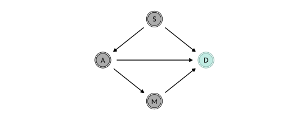
dagitty('dag{ D <- A -> M; D <- S -> A; M -> D }') %>%
impliedConditionalIndependencies()#> M _||_ S | Amodel_south_multi <- quap(
flist = alist(
marriage_std ~ dnorm(mu, sigma),
mu <- alpha + beta_SD * South + beta_AD * median_age_std,
alpha ~ dnorm(0, .2),
beta_SD ~ dnorm(0,.5),
beta_AD ~ dnorm(0,.5),
sigma ~ dexp(1)
),
data = data_south
)
precis(model_south_multi) %>%
as.matrix() %>%
round(digits = 2) %>%
knitr::kable()| mean | sd | 5.5% | 94.5% | |
|---|---|---|---|---|
| alpha | 0.04 | 0.10 | -0.12 | 0.19 |
| beta_SD | -0.17 | 0.19 | -0.48 | 0.14 |
| beta_AD | -0.71 | 0.10 | -0.87 | -0.56 |
| sigma | 0.68 | 0.07 | 0.57 | 0.78 |
M could be independent of S (large spread around zero)
precis(model_south_multi)["beta_SD", ] %>% round(digits = 2)#> mean sd 5.5% 94.5%
#> beta_SD -0.17 0.19 -0.48 0.14Additional scenario (from Jake Thompson)
dag_coords <- tibble(name = c("S", "A", "M", "D"),
x = c(1, 1, 2, 3),
y = c(3, 1, 2, 1)/2)
dagify(D ~ A + M,
M ~ A + S,
A ~ S,
coords = dag_coords) %>%
fortify() %>%
mutate(stage = if_else(name == "D", "response",
if_else(name %in% c("A", "M", "S"),
"predictor", "confounds"))) %>%
plot_dag(clr_in = clr3) +
scale_y_continuous(limits = c(.3, 1.7)) +
coord_equal()
div_dag <- dagitty("dag{S -> M -> D; S -> A -> D; A -> M}")
impliedConditionalIndependencies(div_dag)#> D _||_ S | A, Mmodel_south_multi2 <- quap(
flist = alist(
divorce_std ~ dnorm(mu, sigma),
mu <- alpha + beta_S * South + beta_A * median_age_std + beta_M * marriage_std,
alpha ~ dnorm(0, .2),
beta_S ~ dnorm(0,.5),
beta_A ~ dnorm(0,.5),
beta_M ~ dnorm(0,.5),
sigma ~ dexp(1)
),
data = data_south
)
precis(model_south_multi2) %>%
as.matrix() %>%
round(digits = 2) %>%
knitr::kable()| mean | sd | 5.5% | 94.5% | |
|---|---|---|---|---|
| alpha | -0.08 | 0.11 | -0.25 | 0.09 |
| beta_S | 0.35 | 0.22 | 0.01 | 0.69 |
| beta_A | -0.56 | 0.15 | -0.80 | -0.32 |
| beta_M | -0.04 | 0.15 | -0.28 | 0.19 |
| sigma | 0.76 | 0.08 | 0.64 | 0.88 |
precis(model_south_multi2)["beta_S", ] %>% round(digits = 2)#> mean sd 5.5% 94.5%
#> beta_S 0.35 0.22 0.01 0.696.6 {brms} section
6.6.1 Age at marriage Model
Note the sample_prior = TRUE to also sample from the prior (as well as from the posterior).
Prior samples are extracted with prior_draws().
brms_c5_model_age <- brm(
data = data_waffle,
family = gaussian,
divorce_std ~ 1 + median_age_std,
prior = c(prior(normal(0, 0.2), class = Intercept),
prior(normal(0, 0.5), class = b),
prior(exponential(1), class = sigma)),
iter = 2000, warmup = 1000,
sample_prior = TRUE,
chains = 4, cores = 4,
seed = 42,
file = "brms/brms_c5_model_age")
brms_age_prior <- prior_draws(brms_c5_model_age) %>% as_tibble()
brms_age_prior %>%
slice_sample(n = 50) %>%
rownames_to_column("draw") %>%
expand(nesting(draw, Intercept, b),
a = c(-2, 2)) %>%
mutate(d = Intercept + b * a) %>%
ggplot(aes(a,d, group = draw)) +
geom_line(color = clr0d %>% clr_alpha()) +
labs(x = "median_age_std",
y = "divorce_rate_std")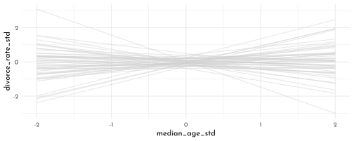
Getting to the posterior predictions with fitted():
nd <- tibble(median_age_std = seq(from = -3, to = 3.2, length.out = 30))
# now use `fitted()` to get the model-implied trajectories
fitted(object = brms_c5_model_age,
newdata = nd) %>%
as_tibble() %>%
bind_cols(nd) %>%
ggplot(aes(x = median_age_std)) +
geom_smooth(aes(y = Estimate, ymin = Q2.5, ymax = Q97.5),
stat = "identity",
color = clr0d, fill = fll0) +
geom_point(data = data_waffle, aes(y = divorce_std), color = clr_dark )+
labs(x = "median_age_std",
y = "divorce_rate_std")
\(\rightarrow\) The posterior for median_age_std (\(\beta_{age}\)) is reliably negative (look at Estimate and 95% quantiles )…
print(brms_c5_model_age)#> Family: gaussian
#> Links: mu = identity; sigma = identity
#> Formula: divorce_std ~ 1 + median_age_std
#> Data: data_waffle (Number of observations: 50)
#> Draws: 4 chains, each with iter = 2000; warmup = 1000; thin = 1;
#> total post-warmup draws = 4000
#>
#> Population-Level Effects:
#> Estimate Est.Error l-95% CI u-95% CI Rhat Bulk_ESS Tail_ESS
#> Intercept 0.00 0.10 -0.20 0.20 1.00 3936 2758
#> median_age_std -0.57 0.11 -0.79 -0.34 1.00 3906 3129
#>
#> Family Specific Parameters:
#> Estimate Est.Error l-95% CI u-95% CI Rhat Bulk_ESS Tail_ESS
#> sigma 0.82 0.08 0.68 1.00 1.00 4302 3021
#>
#> Draws were sampled using sampling(NUTS). For each parameter, Bulk_ESS
#> and Tail_ESS are effective sample size measures, and Rhat is the potential
#> scale reduction factor on split chains (at convergence, Rhat = 1).6.6.2 Marriage rate Model
brms_c5_model_marriage <- brm(
data = data_waffle,
family = gaussian,
divorce_std ~ 1 + marriage_std,
prior = c(prior(normal(0, 0.2), class = Intercept),
prior(normal(0, 0.5), class = b),
prior(exponential(1), class = sigma)),
iter = 2000, warmup = 1000,
chains = 4, cores = 4,
seed = 5,
file = "brms/brms_c5_model_marriage")… smaller magnitude for the marriage rate model:
print(brms_c5_model_marriage)#> Family: gaussian
#> Links: mu = identity; sigma = identity
#> Formula: divorce_std ~ 1 + marriage_std
#> Data: data_waffle (Number of observations: 50)
#> Draws: 4 chains, each with iter = 2000; warmup = 1000; thin = 1;
#> total post-warmup draws = 4000
#>
#> Population-Level Effects:
#> Estimate Est.Error l-95% CI u-95% CI Rhat Bulk_ESS Tail_ESS
#> Intercept 0.00 0.11 -0.22 0.22 1.00 4602 2813
#> marriage_std 0.35 0.13 0.09 0.61 1.00 4325 3000
#>
#> Family Specific Parameters:
#> Estimate Est.Error l-95% CI u-95% CI Rhat Bulk_ESS Tail_ESS
#> sigma 0.95 0.10 0.78 1.16 1.00 4404 3059
#>
#> Draws were sampled using sampling(NUTS). For each parameter, Bulk_ESS
#> and Tail_ESS are effective sample size measures, and Rhat is the potential
#> scale reduction factor on split chains (at convergence, Rhat = 1).nd <- tibble(marriage_std = seq(from = -2.5, to = 3.5, length.out = 30))
# now use `fitted()` to get the model-implied trajectories
fitted(object = brms_c5_model_marriage,
newdata = nd) %>%
as_tibble() %>%
bind_cols(nd) %>%
ggplot(aes(x = marriage_std)) +
geom_smooth(aes(y = Estimate, ymin = Q2.5, ymax = Q97.5),
stat = "identity",
color = clr0d, fill = fll0) +
geom_point(data = data_waffle, aes(y = divorce_std), color = clr_dark )+
labs(x = "marriage_rate_std",
y = "divorce_rate_std")
6.6.3 Multiple regression
brms_c5_model_multiple <- brm(
data = data_waffle,
family = gaussian,
divorce_std ~ 1 + marriage_std + median_age_std,
prior = c(prior(normal(0, 0.2), class = Intercept),
prior(normal(0, 0.5), class = b),
prior(exponential(1), class = sigma)),
iter = 2000, warmup = 1000,
chains = 4, cores = 4,
seed = 42,
file = "brms/brms_c5_model_multiple")print(brms_c5_model_multiple)#> Family: gaussian
#> Links: mu = identity; sigma = identity
#> Formula: divorce_std ~ 1 + marriage_std + median_age_std
#> Data: data_waffle (Number of observations: 50)
#> Draws: 4 chains, each with iter = 2000; warmup = 1000; thin = 1;
#> total post-warmup draws = 4000
#>
#> Population-Level Effects:
#> Estimate Est.Error l-95% CI u-95% CI Rhat Bulk_ESS Tail_ESS
#> Intercept 0.00 0.10 -0.19 0.19 1.00 3829 2943
#> marriage_std -0.06 0.16 -0.37 0.25 1.00 3291 2718
#> median_age_std -0.60 0.16 -0.92 -0.29 1.00 2859 2440
#>
#> Family Specific Parameters:
#> Estimate Est.Error l-95% CI u-95% CI Rhat Bulk_ESS Tail_ESS
#> sigma 0.83 0.09 0.68 1.02 1.00 3553 2380
#>
#> Draws were sampled using sampling(NUTS). For each parameter, Bulk_ESS
#> and Tail_ESS are effective sample size measures, and Rhat is the potential
#> scale reduction factor on split chains (at convergence, Rhat = 1).mixedup::summarise_model(brms_c5_model_multiple)#> Group Effect Variance SD SD_2.5 SD_97.5 Var_prop
#> Residual 0.68 0.83 0.68 1.02 1.00
#> Term Value SE Lower_2.5 Upper_97.5
#> Intercept 0.00 0.10 -0.19 0.19
#> marriage_std -0.06 0.16 -0.37 0.25
#> median_age_std -0.60 0.16 -0.92 -0.29bind_cols(
as_draws_df(brms_c5_model_age) %>%
transmute(`brms_age-beta_age` = b_median_age_std),
as_draws_df(brms_c5_model_marriage) %>%
transmute(`brms_marriage-beta_marriage` = b_marriage_std),
as_draws_df(brms_c5_model_multiple) %>%
transmute(`brms_multi-beta_marriage` = b_marriage_std,
`brms_multi-beta_age` = b_median_age_std)
) %>%
pivot_longer(everything()) %>%
group_by(name) %>%
summarise(mean = mean(value),
ll = quantile(value, prob = .025),
ul = quantile(value, prob = .975)) %>%
separate(col = name, into = c("fit", "parameter"), sep = "-") %>%
ggplot(aes(x = mean, xmin = ll, xmax = ul, y = fit)) +
geom_vline(xintercept = 0, color = clr_dark, linetype = 3) +
geom_pointrange(color = clr0d, fill = clr0, shape = 21) +
facet_wrap(~ parameter, ncol = 1, labeller = label_parsed) +
theme(axis.title = element_blank()) 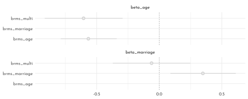
Simulating divorce data
n <- 50
sim_d <- tibble(age = rnorm(n, mean = 0, sd = 1),
mar = rnorm(n, mean = -age, sd = 1),
div = rnorm(n, mean = age, sd = 1))
brms_c5_model_age_sim <- update(brms_c5_model_age,
newdata = sim_d,
formula = div ~ 1 + age,
seed = 42,
file = "brms/brms_c5_model_age_sim")
brms_c5_model_marriage_sim <- update(brms_c5_model_marriage,
newdata = sim_d,
formula = div ~ 1 + mar,
seed = 42,
file = "brms/brms_c5_model_marriage_sim")
brms_c5_model_multiple_sim <- update(brms_c5_model_multiple,
newdata = sim_d,
formula = div ~ 1 + mar + age,
seed = 42,
file = "brms/brms_c5_model_multiple_sim")
bind_cols(
as_draws_df(brms_c5_model_age_sim) %>%
transmute(`brms_age-beta_age` = b_age),
as_draws_df(brms_c5_model_marriage_sim) %>%
transmute(`brms_marriage-beta_marriage` = b_mar),
as_draws_df(brms_c5_model_multiple_sim) %>%
transmute(`brms_multi-beta_marriage` = b_mar,
`brms_multi-beta_age` = b_age)
) %>%
pivot_longer(everything()) %>%
group_by(name) %>%
summarise(mean = mean(value),
ll = quantile(value, prob = .025),
ul = quantile(value, prob = .975)) %>%
separate(col = name, into = c("fit", "parameter"), sep = "-") %>%
ggplot(aes(x = mean, xmin = ll, xmax = ul, y = fit)) +
geom_vline(xintercept = 0, color = clr_dark, linetype = 3) +
geom_pointrange(color = clr0d, fill = clr0, shape = 21) +
facet_wrap(~ parameter, ncol = 1, labeller = label_parsed) +
theme(axis.title = element_blank())
6.6.4 Multivariate Posteriors
brms_c5_model_residuals_marriage <- brm(
data = data_waffle,
family = gaussian,
marriage_std ~ 1 + median_age_std,
prior = c(prior(normal(0, 0.2), class = Intercept),
prior(normal(0, 0.5), class = b),
prior(exponential(1), class = sigma)),
iter = 2000, warmup = 1000,
chains = 4, cores = 4,
seed = 42,
file = "brms/brms_c5_model_residuals_marriage")fitted(brms_c5_model_residuals_marriage) %>%
data.frame() %>%
bind_cols(data_waffle) %>%
as_tibble() %>%
ggplot(aes(x = median_age_std, y = marriage_std)) +
geom_point(color = clr_dark) +
geom_segment(aes(xend = median_age_std, yend = Estimate),
size = .5, linetype = 3) +
geom_line(aes(y = Estimate),
color = clr0d) +
ggrepel::geom_text_repel(data = . %>%
filter(Loc %in% c("WY", "ND", "ME", "HI", "DC")),
aes(label = Loc),
size = 3, seed = 14, family = fnt_sel) +
labs(x = "median_age_std",
y = "marriage_std")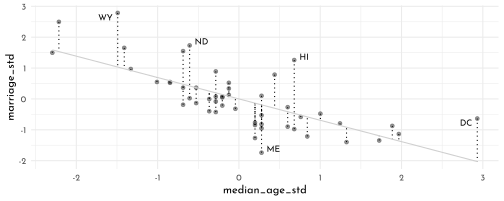
residual_data <- residuals(brms_c5_model_residuals_marriage) %>%
as_tibble() %>%
bind_cols(data_waffle)
brms_c5_model_residuals_data <- brm(
data = residual_data,
family = gaussian,
divorce_std ~ 1 + Estimate,
prior = c(prior(normal(0, 0.2), class = Intercept),
prior(normal(0, 0.5), class = b),
prior(exponential(1), class = sigma)),
iter = 2000, warmup = 1000,
chains = 4, cores = 4,
seed = 42,
file = "brms/brms_c5_model_residuals_data")
nd <- tibble(Estimate = seq(from = -2, to = 2, length.out = 30))
residuals_intervals <- fitted(object = brms_c5_model_residuals_data,
newdata = nd) %>%
as_tibble() %>%
rename(mean = "Estimate") %>%
bind_cols(nd)
residual_data %>%
ggplot(aes(x = Estimate, y = divorce_std)) +
geom_smooth(data = residuals_intervals,
aes(y = mean, ymin = Q2.5, ymax = Q97.5),
stat = "identity",
color = clr0d, fill = fll0) +
geom_vline(xintercept = 0, linetype = 3, color = clr_dark) +
geom_point(color = clr_dark) +
ggrepel::geom_text_repel(data = . %>% filter(Loc %in% c("WY", "ND", "ME", "HI", "DC")),
aes(label = Loc),
size = 3, seed = 5, family = fnt_sel) 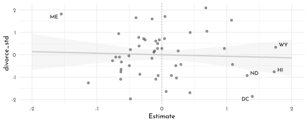
Don’t use residuals as input data for another model - this ignores a ton of uncertainty:
residual_data %>%
ggplot(aes(x = Estimate, y = divorce_std)) +
geom_vline(xintercept = 0, linetype = 3, color = clr_dark) +
geom_pointrange(aes(xmin = `Q2.5`, xmax = `Q97.5`),
color = clr0d, fill = clr0, shape = 21) +
ggrepel::geom_text_repel(data = . %>% filter(Loc %in% c("RI", "ME", "UT", "ID")),
aes(label = Loc),
size = 3, seed = 5, family = fnt_sel) 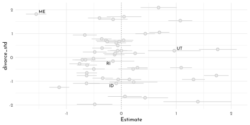
Posterior prediction plot:
fitted(brms_c5_model_multiple) %>%
as_tibble() %>%
bind_cols(data_waffle) %>%
ggplot(aes(x = divorce_std, y = Estimate)) +
geom_abline(slope = 1, linetype = 3, color = clr_dark) +
geom_pointrange(aes(ymin = `Q2.5`, ymax = `Q97.5`),
color = clr0d, fill = clr0, shape = 21) +
ggrepel::geom_text_repel(data = . %>% filter(Loc %in% c("RI", "ME", "UT", "ID")),
aes(label = Loc),
size = 3, seed = 5, family = fnt_sel) 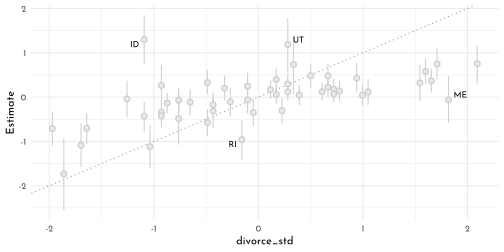
brms_c5_model_spurious <- brm(
data = data_spurious,
family = gaussian,
y ~ 1 + x_real + x_spur,
prior = c(prior(normal(0, 0.2), class = Intercept),
prior(normal(0, 0.5), class = b),
prior(exponential(1), class = sigma)),
iter = 2000, warmup = 1000,
chains = 4, cores = 4,
seed = 42,
file = "brms/brms_c5_model_spurious")
mixedup::extract_fixef(brms_c5_model_spurious)#> # A tibble: 3 × 5
#> term value se lower_2.5 upper_97.5
#> <chr> <dbl> <dbl> <dbl> <dbl>
#> 1 Intercept 0.05 0.096 -0.135 0.242
#> 2 x_real 0.902 0.146 0.619 1.18
#> 3 x_spur 0.094 0.108 -0.113 0.3096.6.5 Counterfactual plots
At this point, it’s important to recognize we have two regression models. As a first step, we might specify each model separately in a
bf()function and save them as objects (Estimating multivariate models with brms).
divorce_model <- bf(divorce.std ~ 1 + median.age.std + marriage.std)
marriage_model <- bf(marriage.std ~ 1 + median.age.std)
divorce_model <- bf(divorcestd ~ 1 + medianagestd + marriagestd)
marriage_model <- bf(marriagestd ~ 1 + medianagestd)Next we will combine our
bf()objects with the+operator within thebrm()function. For a model like this, we also specifyset_rescor(FALSE)to prevent brms from adding a residual correlation between d and m. Also, notice how each prior statement includes a resp argument. This clarifies which sub-model the prior refers to.
# can't use _ or . in column names in this context
data_waffle_short <- data_waffle %>% set_names(nm = names(data_waffle) %>% str_remove_all("_"))
brms_c5_model_counterfactual <- brm(
data = data_waffle_short,
family = gaussian,
divorce_model + marriage_model + set_rescor(FALSE),
prior = c(prior(normal(0, 0.2), class = Intercept, resp = divorcestd),
prior(normal(0, 0.5), class = b, resp = divorcestd),
prior(exponential(1), class = sigma, resp = divorcestd),
prior(normal(0, 0.2), class = Intercept, resp = marriagestd),
prior(normal(0, 0.5), class = b, resp = marriagestd),
prior(exponential(1), class = sigma, resp = marriagestd)),
chains = 4, cores = 4,
seed = 42,
file = "brms/brms_c5_model_counterfactual")
print(brms_c5_model_counterfactual)#> Family: MV(gaussian, gaussian)
#> Links: mu = identity; sigma = identity
#> mu = identity; sigma = identity
#> Formula: divorcestd ~ 1 + medianagestd + marriagestd
#> marriagestd ~ 1 + medianagestd
#> Data: data_waffle_short (Number of observations: 50)
#> Draws: 4 chains, each with iter = 2000; warmup = 1000; thin = 1;
#> total post-warmup draws = 4000
#>
#> Population-Level Effects:
#> Estimate Est.Error l-95% CI u-95% CI Rhat Bulk_ESS
#> divorcestd_Intercept -0.00 0.10 -0.20 0.19 1.00 5659
#> marriagestd_Intercept -0.00 0.09 -0.18 0.17 1.00 5705
#> divorcestd_medianagestd -0.61 0.16 -0.90 -0.29 1.00 3490
#> divorcestd_marriagestd -0.06 0.15 -0.36 0.25 1.00 3354
#> marriagestd_medianagestd -0.69 0.10 -0.89 -0.49 1.00 4910
#> Tail_ESS
#> divorcestd_Intercept 2695
#> marriagestd_Intercept 3063
#> divorcestd_medianagestd 2968
#> divorcestd_marriagestd 2948
#> marriagestd_medianagestd 3278
#>
#> Family Specific Parameters:
#> Estimate Est.Error l-95% CI u-95% CI Rhat Bulk_ESS Tail_ESS
#> sigma_divorcestd 0.83 0.09 0.68 1.02 1.00 5112 3245
#> sigma_marriagestd 0.71 0.08 0.58 0.89 1.00 4852 2896
#>
#> Draws were sampled using sampling(NUTS). For each parameter, Bulk_ESS
#> and Tail_ESS are effective sample size measures, and Rhat is the potential
#> scale reduction factor on split chains (at convergence, Rhat = 1).nd <- tibble(medianagestd = seq(from = -2, to = 2, length.out = 30),
marriagestd = 0)
predict(brms_c5_model_counterfactual,
resp = "divorcestd",
newdata = nd) %>%
data.frame() %>%
bind_cols(nd) %>%
ggplot(aes(x = medianagestd, y = Estimate, ymin = Q2.5, ymax = Q97.5)) +
geom_smooth(stat = "identity",
fill = fll0, color = clr0d, size = .2) +
labs(subtitle = "Total counterfactual effect of A on D",
x = "manipulated median_age_std",
y = "counterfactual divorce_std")
nd <- tibble(marriagestd = seq(from = -2, to = 2, length.out = 30),
medianagestd = 0)
predict(brms_c5_model_counterfactual,
resp = "divorcestd",
newdata = nd) %>%
data.frame() %>%
bind_cols(nd) %>%
ggplot(aes(x = marriagestd, y = Estimate, ymin = Q2.5, ymax = Q97.5)) +
geom_smooth(stat = "identity",
fill = fll0, color = clr0d, size = .2) +
labs(subtitle = "Total counterfactual effect of M on D",
x = "manipulated marriage_std",
y = "counterfactual divorce_std")
6.6.6 Masked Relationships
brms_c5_model_milk_draft <- brm(
data = data_milk,
family = gaussian,
kcal_std ~ 1 + neocortex_std,
prior = c(prior(normal(0, 1), class = Intercept),
prior(normal(0, 1), class = b),
prior(exponential(1), class = sigma)),
iter = 2000, warmup = 1000, chains = 4, cores = 4,
seed = 42,
sample_prior = TRUE,
file = "brms/brms_c5_model_milk_draft")
set.seed(42)
prior_draws(brms_c5_model_milk_draft) %>%
slice_sample(n = 50) %>%
rownames_to_column() %>%
expand(nesting(rowname, Intercept, b),
neocortex_std = c(-2, 2)) %>%
mutate(kcal_std = Intercept + b * neocortex_std) %>%
ggplot(aes(x = neocortex_std, y = kcal_std)) +
geom_line(aes(group = rowname),
color = clr0d %>% clr_alpha()) +
coord_cartesian(ylim = c(-2, 2)) +
labs(x = "neocortex_std",
y = "kcal_std",
subtitle = "Intercept ~ dnorm(0, 1); b ~ dnorm(0, 1)")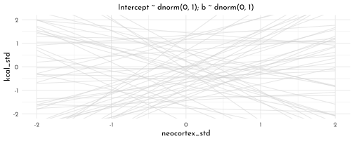
brms_c5_model_milk_cortex <- brm(
data = data_milk,
family = gaussian,
kcal_std ~ 1 + neocortex_std,
prior = c(prior(normal(0, 0.2), class = Intercept),
prior(normal(0, 0.5), class = b),
prior(exponential(1), class = sigma)),
iter = 2000, warmup = 1000, chains = 4, cores = 4,
seed = 42,
sample_prior = TRUE,
file = "brms/brms_c5_model_milk_cortex")
set.seed(42)
prior_draws(brms_c5_model_milk_cortex) %>%
slice_sample(n = 50) %>%
rownames_to_column() %>%
expand(nesting(rowname, Intercept, b),
neocortex_std = c(-2, 2)) %>%
mutate(kcal_std = Intercept + b * neocortex_std) %>%
ggplot(aes(x = neocortex_std, y = kcal_std)) +
geom_line(aes(group = rowname),
color = clr0d %>% clr_alpha()) +
coord_cartesian(ylim = c(-2, 2)) +
labs(x = "neocortex_std",
y = "kcal_std",
subtitle = "Intercept ~ dnorm(0, 0.2); b ~ dnorm(0, 0.5)")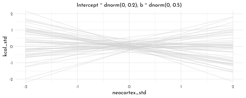
bind_rows(
as_draws_df(brms_c5_model_milk_draft) %>% select(b_Intercept:sigma),
as_draws_df(brms_c5_model_milk_cortex) %>% select(b_Intercept:sigma)
) %>%
mutate(fit = rep(c("milk_draft", "milk_cortex"), each = n() / 2)) %>%
pivot_longer(-fit, names_to = "parameter") %>%
group_by(parameter, fit) %>%
summarise(mean = mean(value),
ll = quantile(value, prob = .025),
ul = quantile(value, prob = .975)) %>%
mutate(fit = factor(fit, levels = c("milk_draft", "milk_cortex"))) %>%
ggplot(aes(x = mean, xmin = ll, xmax = ul, y = fit)) +
geom_vline(xintercept = 0, color = clr_dark, linetype = 3) +
geom_pointrange(color = clr0d, fill = clr0, shape = 21) +
facet_wrap(~ parameter, ncol = 1) +
theme(axis.title = element_blank())
nd <- tibble(neocortex_std = seq(from = -2.5, to = 2, length.out = 30))
fitted(brms_c5_model_milk_cortex,
newdata = nd,
probs = c(.025, .975, .25, .75)) %>%
as_tibble() %>%
bind_cols(nd) %>%
ggplot(aes(x = neocortex_std, y = Estimate, ymin = Q25, ymax = Q75)) +
geom_ribbon(aes(ymin = Q2.5, ymax = Q97.5),
fill = fll0) +
geom_smooth(stat = "identity",
fill = fll0, color = clr0d, size = .2) +
geom_point(data = data_milk, aes(x = neocortex_std, y = kcal_std),
inherit.aes = FALSE, color = clr_dark) +
labs(y = 'kcal_std')
brms_c5_model_milk_weight <- brm(
data = data_milk,
family = gaussian,
kcal_std ~ 1 + mass_std,
prior = c(prior(normal(0, 0.2), class = Intercept),
prior(normal(0, 0.5), class = b),
prior(exponential(1), class = sigma)),
iter = 2000, warmup = 1000,
chains = 4, cores = 4,
seed = 42,
sample_prior = TRUE,
file = "brms/brms_c5_model_milk_weight")
nd <- tibble(mass_std = seq(from = -2.5, to = 2.5, length.out = 30))
fitted(brms_c5_model_milk_weight,
newdata = nd,
probs = c(.025, .975, .25, .75)) %>%
as_tibble() %>%
bind_cols(nd) %>%
ggplot(aes(x = mass_std, y = Estimate, ymin = Q25, ymax = Q75)) +
geom_ribbon(aes(ymin = Q2.5, ymax = Q97.5),
fill = fll0) +
geom_smooth(stat = "identity",
fill = fll0, color = clr0d, size = .2) +
geom_point(data = data_milk, aes(x = mass_std, y = kcal_std),
inherit.aes = FALSE, color = clr_dark) +
labs(y = 'kcal_std')
brms_c5_model_milk_multi <- brm(
data = data_milk,
family = gaussian,
kcal_std ~ 1 + neocortex_std + mass_std,
prior = c(prior(normal(0, 0.2), class = Intercept),
prior(normal(0, 0.5), class = b),
prior(exponential(1), class = sigma)),
iter = 2000, warmup = 1000,
chains = 4, cores = 4,
seed = 42,
file = "brms/brms_c5_model_milk_multi")
bind_cols(
as_draws_df(brms_c5_model_milk_cortex) %>%
transmute(`cortex-beta_N` = b_neocortex_std),
as_draws_df(brms_c5_model_milk_weight) %>%
transmute(`weight-beta_M` = b_mass_std),
as_draws_df(brms_c5_model_milk_multi) %>%
transmute(`multi-beta_N` = b_neocortex_std,
`multi-beta_M` = b_mass_std)
) %>%
pivot_longer(everything()) %>%
group_by(name) %>%
summarise(mean = mean(value),
ll = quantile(value, prob = .025),
ul = quantile(value, prob = .975)) %>%
separate(name, into = c("fit", "parameter"), sep = "-") %>%
ggplot(aes(x = mean, y = fit, xmin = ll, xmax = ul)) +
geom_pointrange(color = clr0d, fill = clr0, shape = 21) +
geom_vline(xintercept = 0, color = clr_dark, linetype = 3) +
ylab(NULL) +
facet_wrap(~ parameter, ncol = 1)
nd <- tibble(neocortex_std = seq(from = -2.5, to = 2, length.out = 30),
mass_std = 0)
fitted(brms_c5_model_milk_multi,
newdata = nd,
probs = c(.025, .975, .25, .75)) %>%
as_tibble() %>%
bind_cols(nd) %>%
ggplot(aes(x = neocortex_std, y = Estimate)) +
geom_ribbon(aes(ymin = Q2.5, ymax = Q97.5),
fill = fll0) +
geom_smooth(aes(ymin = Q25, ymax = Q75),
stat = "identity",
fill = fll0, color = clr0d, size = .2) +
labs(subtitle = "Counterfactual holding M = 0",
x = "neocortex_std",
y = "kcal_std")
nd <- tibble(mass_std = seq(from = -2.5, to = 2.5, length.out = 30),
neocortex_std = 0)
fitted(brms_c5_model_milk_multi,
newdata = nd,
probs = c(.025, .975, .25, .75)) %>%
as_tibble() %>%
bind_cols(nd) %>%
ggplot(aes(x = mass_std, y = Estimate)) +
geom_ribbon(aes(ymin = Q2.5, ymax = Q97.5),
fill = fll0) +
geom_smooth(aes(ymin = Q25, ymax = Q75),
stat = "identity",
fill = fll0, color = clr0d, size = .2) +
labs(subtitle = "Counterfactual holding M = 0",
x = "mass_std",
y = "kcal_std")
brms_c5_model_milk_multi_sim <- update(
brms_c5_model_milk_multi,
newdata = data_milk_sim1,
formula = kcal_std ~ 1 + neocortex_std + mass_std,
seed = 42,
file = "brms/brms_c5_model_milk_multi_sim")
brms_c5_model_milk_cortex_sim <- update(
brms_c5_model_milk_cortex,
formula = kcal_std ~ 1 + neocortex_std,
seed = 42,
file = "brms/brms_c5_model_milk_cortex_sim")
brms_c5_model_milk_weight_sim <- update(
brms_c5_model_milk_weight,
formula = kcal_std ~ 1 + mass_std,
seed = 42,
file = "brms/brms_c5_model_milk_weight_sim")
mixedup::extract_fixef(brms_c5_model_milk_cortex_sim)#> # A tibble: 2 × 5
#> term value se lower_2.5 upper_97.5
#> <chr> <dbl> <dbl> <dbl> <dbl>
#> 1 Intercept 0.003 0.162 -0.324 0.321
#> 2 neocortex_std 0.123 0.231 -0.325 0.584mixedup::extract_fixef(brms_c5_model_milk_weight_sim)#> # A tibble: 2 × 5
#> term value se lower_2.5 upper_97.5
#> <chr> <dbl> <dbl> <dbl> <dbl>
#> 1 Intercept 0.005 0.152 -0.293 0.307
#> 2 mass_std -0.283 0.221 -0.708 0.158mixedup::extract_fixef(brms_c5_model_milk_multi_sim)#> # A tibble: 3 × 5
#> term value se lower_2.5 upper_97.5
#> <chr> <dbl> <dbl> <dbl> <dbl>
#> 1 Intercept -0.047 0.081 -0.208 0.112
#> 2 neocortex_std 0.982 0.096 0.794 1.17
#> 3 mass_std -1.04 0.118 -1.26 -0.8086.6.7 Categorical Variables
6.6.7.1 Binary Categories
For an indicator variable, we need this to be a factor():
data_height <- data_height %>% mutate(sex = factor(sex))
brms_c5_model_height <- brm(
data = data_height,
family = gaussian,
height ~ 0 + sex,
prior = c(prior(normal(178, 20), class = b),
prior(exponential(1), class = sigma)),
iter = 2000, warmup = 1000,
chains = 4, cores = 4,
seed = 42,
file = "brms/brms_c5_model_height")contrasts with {brms}
library(tidybayes)
as_draws_df(brms_c5_model_height) %>%
mutate(diff_fm = b_sex1 - b_sex2) %>%
gather(key, value, -`lp__`) %>%
group_by(key) %>%
mean_qi(value, .width = .89) %>%
filter(!grepl(key, pattern = "^\\.")) %>%
knitr::kable()| key | value | .lower | .upper | .width | .point | .interval |
|---|---|---|---|---|---|---|
| b_sex1 | 134.901752 | 132.38783 | 137.448902 | 0.89 | mean | qi |
| b_sex2 | 142.593033 | 139.91077 | 145.293809 | 0.89 | mean | qi |
| diff_fm | -7.691281 | -11.49839 | -3.924036 | 0.89 | mean | qi |
| sigma | 26.767597 | 25.51963 | 28.079138 | 0.89 | mean | qi |
6.6.7.2 Many Categories
brms_c5_model_milk_clade <- brm(
data = data_milk,
family = gaussian,
kcal_std ~ 0 + clade,
prior = c(prior(normal(0, 0.5), class = b),
prior(exponential(1), class = sigma)),
iter = 2000, warmup = 1000,
chains = 4, cores = 4,
seed = 42,
file = "brms/brms_c5_model_milk_clade")library(bayesplot)
(mcmc_intervals_data(brms_c5_model_milk_clade, prob = .5) %>%
filter(grepl(parameter, pattern = "^b")) %>%
ggplot(aes(y = parameter)) +
geom_vline(xintercept = 0, color = clr_dark, linetype = 3) +
geom_linerange(aes(xmin = ll, xmax = hh), lwd = .2, color = clr2) +
geom_pointrange(aes(xmin = l, x = m, xmax = h),
lwd = .7, shape = 21, color = clr2, fill = clr_lighten(clr2,.2))) +
theme(axis.title = element_blank())
as_draws_df(brms_c5_model_milk_clade) %>%
select(starts_with("b")) %>%
as_tibble() %>%
set_names(x = . , nm = names(.) %>% str_remove("b_clade")) %>%
pivot_longer(everything()) %>%
ggplot(aes(x = value, y = reorder(name, value))) + # note how we used `reorder()` to arrange the coefficients
geom_vline(xintercept = 0, color = clr_dark, linetype = 3) +
stat_pointinterval(point_interval = mode_hdi, .width = .89,
size = 2, shape = 21, color = clr2, fill = clr_lighten(clr2,.2)) +
labs(title = "My tidybayes-based coefficient plot",
x = "expected kcal (std)",
y = NULL)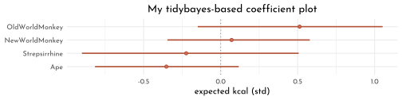
naïve {brms} model fit:
brms_c5_model_milk_house <- brm(
data = data_milk_clade,
family = gaussian,
kcal_std ~ 0 + clade + house,
prior = c(prior(normal(0, 0.5), class = b),
prior(exponential(1), class = sigma)),
iter = 2000, warmup = 1000,
chains = 4, cores = 4,
seed = 42,
file = "brms/brms_c5_model_milk_house")\(\rightarrow\) there are only three house levels 🤨.
mixedup::extract_fixef(brms_c5_model_milk_house)#> # A tibble: 7 × 5
#> term value se lower_2.5 upper_97.5
#> <chr> <dbl> <dbl> <dbl> <dbl>
#> 1 cladeApe -0.431 0.261 -0.932 0.082
#> 2 cladeNewWorldMonkey 0.326 0.253 -0.173 0.824
#> 3 cladeOldWorldMonkey 0.497 0.286 -0.075 1.04
#> 4 cladeStrepsirrhine -0.504 0.294 -1.04 0.088
#> 5 houseHufflepuff -0.175 0.285 -0.742 0.378
#> 6 houseRavenclaw -0.129 0.278 -0.667 0.413
#> 7 houseSlytherin 0.489 0.293 -0.109 1.04precis(model_milk_house, depth = 2) %>%
as.matrix() %>% knitr::kable()| mean | sd | 5.5% | 94.5% | |
|---|---|---|---|---|
| alpha_clade[1] | -0.4205362 | 0.2603510 | -0.8366273 | -0.0044451 |
| alpha_clade[2] | 0.3836736 | 0.2596808 | -0.0313464 | 0.7986937 |
| alpha_clade[3] | 0.5664463 | 0.2890333 | 0.1045153 | 1.0283773 |
| alpha_clade[4] | -0.5055652 | 0.2966455 | -0.9796621 | -0.0314684 |
| alpha_house[1] | -0.1025635 | 0.2617090 | -0.5208251 | 0.3156981 |
| alpha_house[2] | -0.1996998 | 0.2754408 | -0.6399074 | 0.2405079 |
| alpha_house[3] | -0.1603306 | 0.2690551 | -0.5903326 | 0.2696713 |
| alpha_house[4] | 0.4866255 | 0.2875133 | 0.0271236 | 0.9461274 |
| sigma | 0.6631322 | 0.0881257 | 0.5222904 | 0.8039741 |
But there is no overall intercept, α, that stands for the expected value when all the predictors are set to 0. When we use the typical formula syntax with brms, we can suppress the overall intercept when for a single index variable with the
<criterion> ~ 0 + <index variable>syntax. That’s exactly what we did with our b5.9 model. The catch is this approach only works with one index variable within brms. Even though we suppressed the default intercept with our formula,kcal_std ~ 0 + clade + house, we ended up loosing the first category of the second variable, house. […] The solution is the use the non-linear syntax.
brms_c5_model_milk_house_correct_index <-
brm(data = data_milk_clade,
family = gaussian,
bf(kcal_std ~ 0 + a + h,
a ~ 0 + clade,
h ~ 0 + house,
nl = TRUE),
prior = c(prior(normal(0, 0.5), nlpar = a),
prior(normal(0, 0.5), nlpar = h),
prior(exponential(1), class = sigma)),
iter = 2000, warmup = 1000,
chains = 4, cores = 4,
seed = 42,
file = "brms/brms_c5_model_milk_house_correct_index")
mixedup::extract_fixef(brms_c5_model_milk_house_correct_index)#> # A tibble: 8 × 5
#> term value se lower_2.5 upper_97.5
#> <chr> <dbl> <dbl> <dbl> <dbl>
#> 1 a_cladeApe -0.395 0.28 -0.936 0.146
#> 2 a_cladeNewWorldMonkey 0.363 0.28 -0.183 0.902
#> 3 a_cladeOldWorldMonkey 0.527 0.307 -0.112 1.11
#> 4 a_cladeStrepsirrhine -0.455 0.321 -1.10 0.167
#> 5 h_houseGryffindor -0.097 0.284 -0.658 0.445
#> 6 h_houseHufflepuff -0.196 0.298 -0.771 0.396
#> 7 h_houseRavenclaw -0.159 0.285 -0.715 0.39
#> 8 h_houseSlytherin 0.468 0.31 -0.138 1.07as_draws_df(brms_c5_model_milk_house_correct_index) %>%
pivot_longer(starts_with("b_")) %>%
mutate(name = str_remove(name, "b_") %>%
str_remove(., "clade") %>%
str_remove(., "house") %>%
str_replace(., "World", " World ")) %>%
separate(name, into = c("predictor", "level"), sep = "_") %>%
mutate(predictor = if_else(predictor == "a", "clade", "house")) %>%
ggplot(aes(x = value, y = reorder(level, value))) + # note how we used `reorder()` to arrange the coefficients
geom_vline(xintercept = 0, color = clr_dark, linetype = 3) +
stat_pointinterval(point_interval = mode_hdi, .width = .89,
size = 2, color = clr0d, fill = clr0, shape = 21 ) +
labs(x = "expected_kcal_std",
y = NULL) +
facet_wrap(~ predictor, scales = "free_y")
6.6.8 Alternative ways to model multiple categories
6.6.8.1 Contrast Coding
data_contrast <- data_height %>%
mutate(sex_c = if_else(sex == "1", -0.5, 0.5))
brms_c5_model_height_contrast <- brm(
data = data_contrast,
family = gaussian,
height ~ 1 + sex_c,
prior = c(prior(normal(178, 20), class = Intercept),
prior(normal(0, 10), class = b),
prior(exponential(1), class = sigma)),
iter = 2000, warmup = 1000,
chains = 4, cores = 4,
seed = 42,
file = "brms/brms_c5_model_height_contrast")Our posterior for \(\alpha\), above, is designed to capture the
average_of_the_group_means_in_height, notmean_height. In cases where the sample sizes in the two groups were equal, these two would be same. Since we have different numbers of males and females in our data, the two values differ a bit
as_draws_df(brms_c5_model_height_contrast) %>%
mutate(male = b_Intercept - b_sex_c * 0.5,
female = b_Intercept + b_sex_c * 0.5,
`female - male` = b_sex_c) %>%
pivot_longer(male:`female - male`) %>%
ggplot(aes(x = value, y = 0)) +
stat_halfeye(.width = .95, shape = 21,
fill = fll0, color = clr0d,
normalize = "panels") +
scale_y_continuous(NULL, breaks = NULL) +
xlab("height") +
facet_wrap(~ name, scales = "free")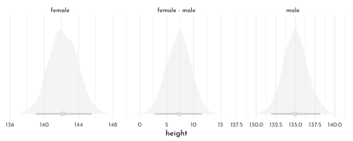
6.6.9 Multilevel ANOVA
(This might make sense after reading Chapter 13…)
\[ \begin{array}{ccccr} K_i & {\sim} & Normal(\mu_i, \sigma) & &\textrm{[likelihood]}\\ \mu_i & = & \alpha + u_{j[i]} & &\textrm{[linear model]}\\ \alpha & \sim & Normal(0, 0.5) & &\textrm{[$\alpha$ prior]}\\ \sigma & \sim & Exponential(1) & &\textrm{[$\sigma$ prior]} \\ u_{j[i]} & \sim & Normal(0, \sigma_{CLADE}) & \textrm{for}~j = 1..4 &\textrm{[u prior]}\\ \sigma_{CLADE} & \sim & Exponential(1) & &\textrm{[$\sigma_{CLADE}$ prior]} \\ \end{array} \]
the four clade-specific deviations from that mean are captured by the four levels of \(u_j\), which are themselves modeled as normally distributed with a mean of zero (because they are deviations, after all) and a standard deviation \(\sigma_{CLADE}\)
brms_c5_model_milk_anova <- brm(
data = data_milk,
family = gaussian,
kcal_std ~ 1 + (1 | clade),
prior = c(prior(normal(0, 0.5), class = Intercept),
prior(exponential(1), class = sigma),
prior(exponential(1), class = sd)),
iter = 2000, warmup = 1000,
chains = 4, cores = 4,
seed = 5,
file = "brms/brms_c5_model_milk_anova")
as_draws_df(brms_c5_model_milk_anova) %>%
mutate(Ape = b_Intercept + `r_clade[Ape,Intercept]`,
`New World Monkey` = b_Intercept + `r_clade[New.World.Monkey,Intercept]`,
`Old World Monkey` = b_Intercept + `r_clade[Old.World.Monkey,Intercept]`,
Strepsirrhine = b_Intercept + `r_clade[Strepsirrhine,Intercept]`) %>%
pivot_longer(Ape:Strepsirrhine) %>%
ggplot(aes(x = value, y = reorder(name, value))) +
geom_vline(xintercept = 0, color = clr_dark, linetype = 3) +
stat_pointinterval(point_interval = mode_hdi, .width = .89,
size = 2, color = clr0d, fill = clr0, shape = 21 ) +
labs(x = "expected_kcal_std",
y = NULL)